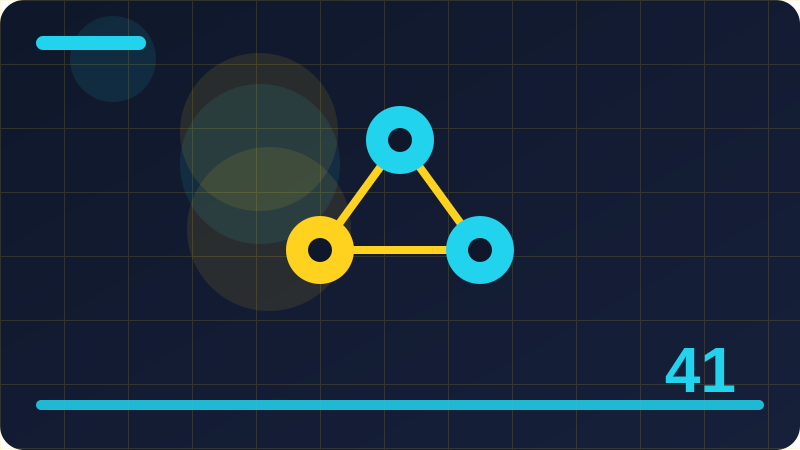

Chapter 41: AI and Creativity in Plain Words

Section 1: What Creativity Means When a Machine Helps
Let us take what creativity means when a machine helps slowly and carefully, because ideas that look simple on the surface often hide a useful distinction underneath. In this section you will meet that distinction, see it in a small local example, and learn the habit that keeps you in control of the tool instead of the other way round. Read with a notebook nearby if you can, and pause whenever an example reminds you of something you have tried yourself.
One key idea about what creativity means when a machine helps is this: creativity is not only producing something new, but producing something new that matters to someone, for a reason you can explain. That matters because it changes what you should do next, not just what you believe. When you can name the effect, you can plan around it instead of being surprised by it.
One key idea about what creativity means when a machine helps is this: a machine can combine words, shapes, and patterns very quickly, but it does not know why a combination matters or whom it might move. That matters because it changes what you should do next, not just what you believe. When you can name the effect, you can plan around it instead of being surprised by it.
One key idea about what creativity means when a machine helps is this: your role stays central, because meaning, purpose, and taste come from your life, your audience, and your choices. A beginner who understands this point will make better choices than an expert who ignores it, because most mistakes here come from rushing, not from lack of talent.
The small program below lets you try a toy version of this idea on your own machine, using only the Python standard library and your own words. Run it, read the output, then change one list item or one value and run it again, so you can see exactly what each part contributes to the result.
Watch out for the easy trap of accepting the first result because it looks polished. A smooth sentence is not the same as a true sentence, and a pretty picture is not the same as a good design. Pause before you keep anything, and ask whether it fits your purpose, whether it says what you meant, and whether you could defend every part of it if someone asked you about it tomorrow.
Before you move on, try the small code example in this section on your own machine, change one value, and run it again. Notice what stays the same and what changes, and write one sentence about what you learned. That single sentence is worth more than reading the section twice, because it proves the idea in your own words. A small toy example teaches more than a grand claim, because you can see each step, change one part, and watch the result change in a way you understand.
import random
random.seed(7)
starts = ["A lighthouse keeper", "A young inventor", "A travelling cook"]
places = ["in a quiet harbour town", "on a floating market", "beside an old railway station"]
for start in starts:
print(start, random.choice(places) + ".")Check: How would you explain what creativity means when a machine helps to a friend who has never used an AI tool?
Section 2: Ideas Are Combinations, Not Magic
This section introduces ideas are combinations, not magic in plain words, one idea at a time. You will not be asked to trust any big claim, and you will not need any paid service or outside account. Everything here runs locally, with small toy examples, so you can test each idea yourself, change one thing, run it again, and watch what changes.
One key idea about ideas are combinations, not magic is this: most fresh ideas are familiar pieces joined in an unfamiliar way, such as a lighthouse keeper meeting a floating market. If you ever feel unsure about this point, return to a concrete example rather than an abstract argument. One real, small, local example usually clears up more confusion than ten general claims.
One key idea about ideas are combinations, not magic is this: seeing ideas as combinations makes creativity learnable, because you can practise joining pieces deliberately instead of waiting for inspiration. Try it with a tiny example of your own before you trust it on a bigger task. Small tests reveal big misunderstandings cheaply, and that cheap lesson is one of the best gifts of working locally.
One key idea about ideas are combinations, not magic is this: the skill lies in choosing which combination is worth keeping, and that choice is a human judgment, not a machine calculation. If you ever feel unsure about this point, return to a concrete example rather than an abstract argument. One real, small, local example usually clears up more confusion than ten general claims.
The small program below lets you try a toy version of this idea on your own machine, using only the Python standard library and your own words. Run it, read the output, then change one list item or one value and run it again, so you can see exactly what each part contributes to the result.
Remember that the tool is only one part of the process, and usually not the most important part. Your goal, your audience, your taste, and your checking matter more than the speed of any generator. When you keep those human parts in charge, the tool becomes a genuine helper. When you hand them over, the tool starts making decisions you should be making yourself.
The main point to carry forward is a simple one: stay the person who decides. Use the tool to widen your choices, to draft faster, or to test an idea, and then bring your own judgment back to the centre. Tools change quickly, but that habit of deciding, checking, and owning the result will serve you in every tool you meet next. Keep your experiments short and your notes shorter still, so that looking back later actually helps you instead of burying you in files you never reread. The best creative tools are the ones that leave room for your taste, your memories, and your reasons, rather than filling every gap with a ready-made answer.
import random
random.seed(3)
words_a = ["silent", "brave", "curious", "patient"]
words_b = ["river", "compass", "lantern", "garden"]
for a in words_a:
print(a, random.choice(words_b))Check: Give a small local example of ideas are combinations, not magic from your own files or ideas, and say what you would check before keeping it.
Section 3: Using AI as a Brainstorming Partner
Many beginners meet using ai as a brainstorming partner through headlines, adverts, or a single impressive demo, and those sources tend to show only the best result. This section shows the ordinary middle of the work instead: the trying, the choosing, the fixing, and the checking. That middle is where skill actually grows, and it is the part you can practise today with nothing more than your own computer and your own files.
One key idea about using ai as a brainstorming partner is this: a brainstorming partner is useful when it widens your options, offering directions you might not have reached on your own. Notice how this point connects to the sections around it. Ideas in this book build on each other, and a point that seems small here often becomes the key to a harder problem later.
One key idea about using ai as a brainstorming partner is this: a good brainstorming session still needs a question worth answering, or the options will wander in every direction at once. A beginner who understands this point will make better choices than an expert who ignores it, because most mistakes here come from rushing, not from lack of talent.
One key idea about using ai as a brainstorming partner is this: you should keep far more ideas than you use, because the value of brainstorming is in the choosing that follows it. Try it with a tiny example of your own before you trust it on a bigger task. Small tests reveal big misunderstandings cheaply, and that cheap lesson is one of the best gifts of working locally.
The small program below lets you try a toy version of this idea on your own machine, using only the Python standard library and your own words. Run it, read the output, then change one list item or one value and run it again, so you can see exactly what each part contributes to the result.
Watch out for the easy trap of accepting the first result because it looks polished. A smooth sentence is not the same as a true sentence, and a pretty picture is not the same as a good design. Pause before you keep anything, and ask whether it fits your purpose, whether it says what you meant, and whether you could defend every part of it if someone asked you about it tomorrow.
If one idea from this section sticks, let it be this: slow, honest checking beats fast, careless output every time. Speed feels impressive in the moment, but checked work is the work people trust, reuse, and remember. Build the checking habit now, while your projects are small, and it will already be strong when your projects grow. The best creative tools are the ones that leave room for your taste, your memories, and your reasons, rather than filling every gap with a ready-made answer. When an output surprises you, pause and ask whether the surprise is genuinely useful or merely new, because novelty alone is a poor reason to keep something.
import itertools
themes = ["memory", "friendship", "courage"]
settings = ["a library", "a night train"]
for theme, setting in itertools.product(themes, settings):
print(theme, "in", setting)Check: When would using ai as a brainstorming partner be genuinely helpful, and when would a simpler human-only approach be better?
Section 4: Turning a Rough Idea into a Draft
Let us take turning a rough idea into a draft slowly and carefully, because ideas that look simple on the surface often hide a useful distinction underneath. In this section you will meet that distinction, see it in a small local example, and learn the habit that keeps you in control of the tool instead of the other way round. Read with a notebook nearby if you can, and pause whenever an example reminds you of something you have tried yourself.
One key idea about turning a rough idea into a draft is this: a rough idea becomes a draft when you give it a shape: a beginning, a middle, an end, and a reader to serve. If you ever feel unsure about this point, return to a concrete example rather than an abstract argument. One real, small, local example usually clears up more confusion than ten general claims.
One key idea about turning a rough idea into a draft is this: tools can expand a rough idea quickly, but expansion is not the same as structure, and a shapeless draft rarely satisfies a reader. In practice, this is the difference between using a tool well and being used by it. The careful user notices the effect early, while the careless user only notices it after the work is already shared.
One key idea about turning a rough idea into a draft is this: the first draft only needs to exist, because you cannot revise a blank page, and revision is where the real craft happens. In practice, this is the difference between using a tool well and being used by it. The careful user notices the effect early, while the careless user only notices it after the work is already shared.
The small program below lets you try a toy version of this idea on your own machine, using only the Python standard library and your own words. Run it, read the output, then change one list item or one value and run it again, so you can see exactly what each part contributes to the result.
Remember that the tool is only one part of the process, and usually not the most important part. Your goal, your audience, your taste, and your checking matter more than the speed of any generator. When you keep those human parts in charge, the tool becomes a genuine helper. When you hand them over, the tool starts making decisions you should be making yourself.
You do not need to master everything in this section today. Pick the one idea that felt most useful, try it in a tiny example of your own, and keep the rest as a map for later. Learning works best in layers: a first pass for the shape of the idea, a second pass when you actually need it, and real practice in between. When an output surprises you, pause and ask whether the surprise is genuinely useful or merely new, because novelty alone is a poor reason to keep something.
import random
random.seed(11)
ideas = ["a song about rain", "a story about a lost key",
"a picture of a clockwork bird", "a poem about morning light"]
random.shuffle(ideas)
for idea in ideas:
print("Try:", idea)Check: How would you explain turning a rough idea into a draft to a friend who has never used an AI tool?
Section 5: Keeping Your Own Voice in the Work
This section introduces keeping your own voice in the work in plain words, one idea at a time. You will not be asked to trust any big claim, and you will not need any paid service or outside account. Everything here runs locally, with small toy examples, so you can test each idea yourself, change one thing, run it again, and watch what changes.
One key idea about keeping your own voice in the work is this: your voice is the set of choices only you would make: the details you notice, the words you prefer, and the things you care about. That matters because it changes what you should do next, not just what you believe. When you can name the effect, you can plan around it instead of being surprised by it.
One key idea about keeping your own voice in the work is this: when every sentence could have come from anyone, the work loses the very quality that makes readers trust and remember it. In practice, this is the difference between using a tool well and being used by it. The careful user notices the effect early, while the careless user only notices it after the work is already shared.
One key idea about keeping your own voice in the work is this: protect your voice by writing at least some passages entirely yourself, especially the passages that carry the heart of the piece. That matters because it changes what you should do next, not just what you believe. When you can name the effect, you can plan around it instead of being surprised by it.
The small program below lets you try a toy version of this idea on your own machine, using only the Python standard library and your own words. Run it, read the output, then change one list item or one value and run it again, so you can see exactly what each part contributes to the result.
Watch out for the easy trap of accepting the first result because it looks polished. A smooth sentence is not the same as a true sentence, and a pretty picture is not the same as a good design. Pause before you keep anything, and ask whether it fits your purpose, whether it says what you meant, and whether you could defend every part of it if someone asked you about it tomorrow.
As you finish this section, ask yourself one honest question: could you explain this idea without the tool in front of you? If the answer is yes, you have genuinely learned something. If the answer is not yet, that is fine too: reread the example, run the code once more, and try the Check question in your own words before moving on. Share your work with one trusted person before you share it widely, since a single honest reader often spots what hours of generating cannot. A finished piece you understand deeply is worth far more than ten polished drafts you could not explain, defend, or happily revise.
def combine(a, b):
return a + " meets " + b
print(combine("a clockmaker", "a river festival"))
print(combine("a young gardener", "a city of mirrors"))Check: Give a small local example of keeping your own voice in the work from your own files or ideas, and say what you would check before keeping it.
Section 6: AI and Writing Stories
Many beginners meet ai and writing stories through headlines, adverts, or a single impressive demo, and those sources tend to show only the best result. This section shows the ordinary middle of the work instead: the trying, the choosing, the fixing, and the checking. That middle is where skill actually grows, and it is the part you can practise today with nothing more than your own computer and your own files.
One key idea about ai and writing stories is this: a story needs a character who wants something, an obstacle in the way, and a change that matters by the end. If you ever feel unsure about this point, return to a concrete example rather than an abstract argument. One real, small, local example usually clears up more confusion than ten general claims.
One key idea about ai and writing stories is this: a tool can suggest characters, settings, and twists, but it cannot feel whether a twist is earned or merely surprising. In practice, this is the difference between using a tool well and being used by it. The careful user notices the effect early, while the careless user only notices it after the work is already shared.
One key idea about ai and writing stories is this: the writer's job is to test each suggestion against the story's own logic, and to keep only what the story itself would support. In practice, this is the difference between using a tool well and being used by it. The careful user notices the effect early, while the careless user only notices it after the work is already shared.
The small program below lets you try a toy version of this idea on your own machine, using only the Python standard library and your own words. Run it, read the output, then change one list item or one value and run it again, so you can see exactly what each part contributes to the result.
Remember that the tool is only one part of the process, and usually not the most important part. Your goal, your audience, your taste, and your checking matter more than the speed of any generator. When you keep those human parts in charge, the tool becomes a genuine helper. When you hand them over, the tool starts making decisions you should be making yourself.
Keep this section as a reference, not a rulebook. Different projects will need different choices, and part of growing skill is learning when to follow a guideline and when to adapt it with good reason. What should not change is the core habit: know what you asked for, look carefully at what you got, and take responsibility for what you keep. A finished piece you understand deeply is worth far more than ten polished drafts you could not explain, defend, or happily revise. Treat every tool output as a draft on your desk, not a verdict from an expert, and you will keep both your standards and your confidence intact.
import random
random.seed(5)
titles = ["The", "A", "One"]
nouns = ["Lantern", "River", "Letter", "Garden"]
for _ in range(4):
print(random.choice(titles), random.choice(nouns), "Story")Check: When would ai and writing stories be genuinely helpful, and when would a simpler human-only approach be better?
Section 7: AI and Song Lyrics in Plain Words
Let us take ai and song lyrics in plain words slowly and carefully, because ideas that look simple on the surface often hide a useful distinction underneath. In this section you will meet that distinction, see it in a small local example, and learn the habit that keeps you in control of the tool instead of the other way round. Read with a notebook nearby if you can, and pause whenever an example reminds you of something you have tried yourself.
One key idea about ai and song lyrics in plain words is this: a lyric works when its words, rhythm, and feeling fit together, and when a listener can hold the line in memory after hearing it once. Notice how this point connects to the sections around it. Ideas in this book build on each other, and a point that seems small here often becomes the key to a harder problem later.
One key idea about ai and song lyrics in plain words is this: a tool can rhyme and count syllables, but rhyme alone does not make a lyric honest, memorable, or worth singing. Try it with a tiny example of your own before you trust it on a bigger task. Small tests reveal big misunderstandings cheaply, and that cheap lesson is one of the best gifts of working locally.
One key idea about ai and song lyrics in plain words is this: the best use of a lyric helper is to break a block or to offer a fresh image, and then to reshape the result until it sounds like you. Notice how this point connects to the sections around it. Ideas in this book build on each other, and a point that seems small here often becomes the key to a harder problem later.
The small program below lets you try a toy version of this idea on your own machine, using only the Python standard library and your own words. Run it, read the output, then change one list item or one value and run it again, so you can see exactly what each part contributes to the result.
Watch out for the easy trap of accepting the first result because it looks polished. A smooth sentence is not the same as a true sentence, and a pretty picture is not the same as a good design. Pause before you keep anything, and ask whether it fits your purpose, whether it says what you meant, and whether you could defend every part of it if someone asked you about it tomorrow.
Before you move on, try the small code example in this section on your own machine, change one value, and run it again. Notice what stays the same and what changes, and write one sentence about what you learned. That single sentence is worth more than reading the section twice, because it proves the idea in your own words. Treat every tool output as a draft on your desk, not a verdict from an expert, and you will keep both your standards and your confidence intact.
def make_character(name, wish, fear):
return {"name": name, "wish": wish, "fear": fear}
hero = make_character("Ada", "to build a boat", "deep water")
print(hero["name"], "wants", hero["wish"], "but fears", hero["fear"])Check: How would you explain ai and song lyrics in plain words to a friend who has never used an AI tool?
Section 8: AI and Pictures: What the Tool Really Does
This section introduces ai and pictures: what the tool really does in plain words, one idea at a time. You will not be asked to trust any big claim, and you will not need any paid service or outside account. Everything here runs locally, with small toy examples, so you can test each idea yourself, change one thing, run it again, and watch what changes.
One key idea about ai and pictures: what the tool really does is this: an image tool produces pixels that follow patterns learned from many pictures, and it does not see, understand, or intend the scene it draws. A beginner who understands this point will make better choices than an expert who ignores it, because most mistakes here come from rushing, not from lack of talent.
One key idea about ai and pictures: what the tool really does is this: because the tool has no intention, details that look meaningful may be accidents, such as hands, text, or objects that do not quite make sense. In practice, this is the difference between using a tool well and being used by it. The careful user notices the effect early, while the careless user only notices it after the work is already shared.
One key idea about ai and pictures: what the tool really does is this: a careful creator checks an image closely, fixes what is wrong, and never presents a generated picture as a photograph of a real event. A beginner who understands this point will make better choices than an expert who ignores it, because most mistakes here come from rushing, not from lack of talent.
The small program below lets you try a toy version of this idea on your own machine, using only the Python standard library and your own words. Run it, read the output, then change one list item or one value and run it again, so you can see exactly what each part contributes to the result.
Remember that the tool is only one part of the process, and usually not the most important part. Your goal, your audience, your taste, and your checking matter more than the speed of any generator. When you keep those human parts in charge, the tool becomes a genuine helper. When you hand them over, the tool starts making decisions you should be making yourself.
The main point to carry forward is a simple one: stay the person who decides. Use the tool to widen your choices, to draft faster, or to test an idea, and then bring your own judgment back to the centre. Tools change quickly, but that habit of deciding, checking, and owning the result will serve you in every tool you meet next. Your own life, street, family stories, and daily observations are material no tool can invent for you, and they are what make work feel truly yours. Practice in small daily rounds beats rare heroic sessions, because creativity, like any skill, grows through regular, low-pressure repetition.
import random
random.seed(9)
twists = ["the map was upside down", "the letter arrived a year late",
"the quiet neighbour knew the way"]
print("Twist:", random.choice(twists))Check: Give a small local example of ai and pictures: what the tool really does from your own files or ideas, and say what you would check before keeping it.
Section 9: Remixing Without Copying
Many beginners meet remixing without copying through headlines, adverts, or a single impressive demo, and those sources tend to show only the best result. This section shows the ordinary middle of the work instead: the trying, the choosing, the fixing, and the checking. That middle is where skill actually grows, and it is the part you can practise today with nothing more than your own computer and your own files.
One key idea about remixing without copying is this: remixing means taking an idea, a structure, or a technique and transforming it into something new, not lifting someone's finished work. If you ever feel unsure about this point, return to a concrete example rather than an abstract argument. One real, small, local example usually clears up more confusion than ten general claims.
One key idea about remixing without copying is this: the line between inspiration and copying is drawn by how much you transform, how much you add, and whether the original is still recognisable as the main value. Try it with a tiny example of your own before you trust it on a bigger task. Small tests reveal big misunderstandings cheaply, and that cheap lesson is one of the best gifts of working locally.
One key idea about remixing without copying is this: when in doubt, change the source further, add your own material, and give credit where credit is honestly due. Notice how this point connects to the sections around it. Ideas in this book build on each other, and a point that seems small here often becomes the key to a harder problem later.
The small program below lets you try a toy version of this idea on your own machine, using only the Python standard library and your own words. Run it, read the output, then change one list item or one value and run it again, so you can see exactly what each part contributes to the result.
Watch out for the easy trap of accepting the first result because it looks polished. A smooth sentence is not the same as a true sentence, and a pretty picture is not the same as a good design. Pause before you keep anything, and ask whether it fits your purpose, whether it says what you meant, and whether you could defend every part of it if someone asked you about it tomorrow.
If one idea from this section sticks, let it be this: slow, honest checking beats fast, careless output every time. Speed feels impressive in the moment, but checked work is the work people trust, reuse, and remember. Build the checking habit now, while your projects are small, and it will already be strong when your projects grow. Practice in small daily rounds beats rare heroic sessions, because creativity, like any skill, grows through regular, low-pressure repetition. If a tool makes you feel rushed, slow down on purpose: read the draft aloud, mark what you like, and rewrite the rest in your own voice.
def score_idea(text, words_you_love):
score = sum(1 for word in words_you_love if word in text.lower())
return score
print(score_idea("a brave gardener saves the river festival",
["brave", "river", "garden"]))Check: When would remixing without copying be genuinely helpful, and when would a simpler human-only approach be better?
Section 10: Originality and Where Ideas Come From
Let us take originality and where ideas come from slowly and carefully, because ideas that look simple on the surface often hide a useful distinction underneath. In this section you will meet that distinction, see it in a small local example, and learn the habit that keeps you in control of the tool instead of the other way round. Read with a notebook nearby if you can, and pause whenever an example reminds you of something you have tried yourself.
One key idea about originality and where ideas come from is this: originality rarely means inventing from nothing; it usually means combining, reframing, or finishing an idea in a way nobody else did. In practice, this is the difference between using a tool well and being used by it. The careful user notices the effect early, while the careless user only notices it after the work is already shared.
One key idea about originality and where ideas come from is this: your experiences, reading, conversations, and observations are a private source of material that no tool shares with anyone else. If you ever feel unsure about this point, return to a concrete example rather than an abstract argument. One real, small, local example usually clears up more confusion than ten general claims.
One key idea about originality and where ideas come from is this: chasing pure novelty is a trap, because a work can be brand new and still empty, while a familiar story told honestly can feel entirely fresh. Try it with a tiny example of your own before you trust it on a bigger task. Small tests reveal big misunderstandings cheaply, and that cheap lesson is one of the best gifts of working locally.
The small program below lets you try a toy version of this idea on your own machine, using only the Python standard library and your own words. Run it, read the output, then change one list item or one value and run it again, so you can see exactly what each part contributes to the result.
Remember that the tool is only one part of the process, and usually not the most important part. Your goal, your audience, your taste, and your checking matter more than the speed of any generator. When you keep those human parts in charge, the tool becomes a genuine helper. When you hand them over, the tool starts making decisions you should be making yourself.
You do not need to master everything in this section today. Pick the one idea that felt most useful, try it in a tiny example of your own, and keep the rest as a map for later. Learning works best in layers: a first pass for the shape of the idea, a second pass when you actually need it, and real practice in between. If a tool makes you feel rushed, slow down on purpose: read the draft aloud, mark what you like, and rewrite the rest in your own voice.
import random
random.seed(21)
lines = ["Morning light on the water,", "a small boat waits by the shore,",
"the town wakes slowly,", "and the story begins again."]
for line in lines:
print(line)Check: How would you explain originality and where ideas come from to a friend who has never used an AI tool?
Section 11: The Human Chooses: Taste and Judgment
This section introduces the human chooses: taste and judgment in plain words, one idea at a time. You will not be asked to trust any big claim, and you will not need any paid service or outside account. Everything here runs locally, with small toy examples, so you can test each idea yourself, change one thing, run it again, and watch what changes.
One key idea about the human chooses: taste and judgment is this: taste is the quiet skill of recognising what fits, what is too much, and what is missing, and it grows only through looking and choosing. In practice, this is the difference between using a tool well and being used by it. The careful user notices the effect early, while the careless user only notices it after the work is already shared.
One key idea about the human chooses: taste and judgment is this: a tool can offer fifty options, but it cannot tell you which one your reader needs, because it does not know your reader. That matters because it changes what you should do next, not just what you believe. When you can name the effect, you can plan around it instead of being surprised by it.
One key idea about the human chooses: taste and judgment is this: every time you choose deliberately and note why, you train your taste a little further, and that training is the real creative asset. Try it with a tiny example of your own before you trust it on a bigger task. Small tests reveal big misunderstandings cheaply, and that cheap lesson is one of the best gifts of working locally.
The small program below lets you try a toy version of this idea on your own machine, using only the Python standard library and your own words. Run it, read the output, then change one list item or one value and run it again, so you can see exactly what each part contributes to the result.
Watch out for the easy trap of accepting the first result because it looks polished. A smooth sentence is not the same as a true sentence, and a pretty picture is not the same as a good design. Pause before you keep anything, and ask whether it fits your purpose, whether it says what you meant, and whether you could defend every part of it if someone asked you about it tomorrow.
As you finish this section, ask yourself one honest question: could you explain this idea without the tool in front of you? If the answer is yes, you have genuinely learned something. If the answer is not yet, that is fine too: reread the example, run the code once more, and try the Check question in your own words before moving on. Honest credit protects you and respects others, and it also helps readers understand how the work was made and what part of it is truly yours.
import random
random.seed(7)
starts = ["A lighthouse keeper", "A young inventor", "A travelling cook"]
places = ["in a quiet harbour town", "on a floating market", "beside an old railway station"]
for start in starts:
print(start, random.choice(places) + ".")Check: Give a small local example of the human chooses: taste and judgment from your own files or ideas, and say what you would check before keeping it.
Section 12: Editing AI Output Like a Draft
Many beginners meet editing ai output like a draft through headlines, adverts, or a single impressive demo, and those sources tend to show only the best result. This section shows the ordinary middle of the work instead: the trying, the choosing, the fixing, and the checking. That middle is where skill actually grows, and it is the part you can practise today with nothing more than your own computer and your own files.
One key idea about editing ai output like a draft is this: treat every tool output as a first draft from a stranger: useful raw material that still needs your reading, cutting, and rewriting. If you ever feel unsure about this point, return to a concrete example rather than an abstract argument. One real, small, local example usually clears up more confusion than ten general claims.
One key idea about editing ai output like a draft is this: good editing asks three questions of every line: is it true to my purpose, is it clear to my reader, and does it sound like me. Try it with a tiny example of your own before you trust it on a bigger task. Small tests reveal big misunderstandings cheaply, and that cheap lesson is one of the best gifts of working locally.
One key idea about editing ai output like a draft is this: cutting is often more creative than adding, because removing the weak lines lets the strong lines finally be seen. If you ever feel unsure about this point, return to a concrete example rather than an abstract argument. One real, small, local example usually clears up more confusion than ten general claims.
The small program below lets you try a toy version of this idea on your own machine, using only the Python standard library and your own words. Run it, read the output, then change one list item or one value and run it again, so you can see exactly what each part contributes to the result.
Remember that the tool is only one part of the process, and usually not the most important part. Your goal, your audience, your taste, and your checking matter more than the speed of any generator. When you keep those human parts in charge, the tool becomes a genuine helper. When you hand them over, the tool starts making decisions you should be making yourself.
Keep this section as a reference, not a rulebook. Different projects will need different choices, and part of growing skill is learning when to follow a guideline and when to adapt it with good reason. What should not change is the core habit: know what you asked for, look carefully at what you got, and take responsibility for what you keep. Keep a list of ideas that did not work, because a rejected idea often becomes the seed of a better one once you have learned a little more. A clear purpose makes choosing easier: when you know who the work is for and what it should do, most options eliminate themselves quickly.
import random
random.seed(3)
words_a = ["silent", "brave", "curious", "patient"]
words_b = ["river", "compass", "lantern", "garden"]
for a in words_a:
print(a, random.choice(words_b))Check: When would editing ai output like a draft be genuinely helpful, and when would a simpler human-only approach be better?
Section 13: When AI Output Feels Flat
Let us take when ai output feels flat slowly and carefully, because ideas that look simple on the surface often hide a useful distinction underneath. In this section you will meet that distinction, see it in a small local example, and learn the habit that keeps you in control of the tool instead of the other way round. Read with a notebook nearby if you can, and pause whenever an example reminds you of something you have tried yourself.
One key idea about when ai output feels flat is this: flat output usually comes from a flat request: a vague question produces a vague answer, dressed in confident, polished language. If you ever feel unsure about this point, return to a concrete example rather than an abstract argument. One real, small, local example usually clears up more confusion than ten general claims.
One key idea about when ai output feels flat is this: adding a specific audience, a specific feeling, and a specific detail from your own life usually lifts a draft more than asking for more output. If you ever feel unsure about this point, return to a concrete example rather than an abstract argument. One real, small, local example usually clears up more confusion than ten general claims.
One key idea about when ai output feels flat is this: if a draft still feels flat after honest revision, the kindest move is to start again from a better idea rather than polishing a weak one. A beginner who understands this point will make better choices than an expert who ignores it, because most mistakes here come from rushing, not from lack of talent.
The small program below lets you try a toy version of this idea on your own machine, using only the Python standard library and your own words. Run it, read the output, then change one list item or one value and run it again, so you can see exactly what each part contributes to the result.
Watch out for the easy trap of accepting the first result because it looks polished. A smooth sentence is not the same as a true sentence, and a pretty picture is not the same as a good design. Pause before you keep anything, and ask whether it fits your purpose, whether it says what you meant, and whether you could defend every part of it if someone asked you about it tomorrow.
Before you move on, try the small code example in this section on your own machine, change one value, and run it again. Notice what stays the same and what changes, and write one sentence about what you learned. That single sentence is worth more than reading the section twice, because it proves the idea in your own words. A clear purpose makes choosing easier: when you know who the work is for and what it should do, most options eliminate themselves quickly. Do not mistake fluency for truth or beauty for meaning; both can be produced by a machine without understanding, and both still need your judgment.
import itertools
themes = ["memory", "friendship", "courage"]
settings = ["a library", "a night train"]
for theme, setting in itertools.product(themes, settings):
print(theme, "in", setting)Check: How would you explain when ai output feels flat to a friend who has never used an AI tool?
Section 14: Adding Personal Detail Only You Know
This section introduces adding personal detail only you know in plain words, one idea at a time. You will not be asked to trust any big claim, and you will not need any paid service or outside account. Everything here runs locally, with small toy examples, so you can test each idea yourself, change one thing, run it again, and watch what changes.
One key idea about adding personal detail only you know is this: personal detail is what turns a generic scene into a believable one, such as the exact sound of a market at dawn in your own town. Try it with a tiny example of your own before you trust it on a bigger task. Small tests reveal big misunderstandings cheaply, and that cheap lesson is one of the best gifts of working locally.
One key idea about adding personal detail only you know is this: a tool cannot invent your memories, so the details that make work feel alive must come from your observation and your life. If you ever feel unsure about this point, return to a concrete example rather than an abstract argument. One real, small, local example usually clears up more confusion than ten general claims.
One key idea about adding personal detail only you know is this: one true, specific detail often does more work than a page of decoration, because readers trust what feels observed rather than assembled. If you ever feel unsure about this point, return to a concrete example rather than an abstract argument. One real, small, local example usually clears up more confusion than ten general claims.
The small program below lets you try a toy version of this idea on your own machine, using only the Python standard library and your own words. Run it, read the output, then change one list item or one value and run it again, so you can see exactly what each part contributes to the result.
Remember that the tool is only one part of the process, and usually not the most important part. Your goal, your audience, your taste, and your checking matter more than the speed of any generator. When you keep those human parts in charge, the tool becomes a genuine helper. When you hand them over, the tool starts making decisions you should be making yourself.
The main point to carry forward is a simple one: stay the person who decides. Use the tool to widen your choices, to draft faster, or to test an idea, and then bring your own judgment back to the centre. Tools change quickly, but that habit of deciding, checking, and owning the result will serve you in every tool you meet next. Do not mistake fluency for truth or beauty for meaning; both can be produced by a machine without understanding, and both still need your judgment. Revising is where most of the real creativity happens, so give your revisions at least as much time and respect as your first drafts.
import random
random.seed(11)
ideas = ["a song about rain", "a story about a lost key",
"a picture of a clockwork bird", "a poem about morning light"]
random.shuffle(ideas)
for idea in ideas:
print("Try:", idea)Check: Give a small local example of adding personal detail only you know from your own files or ideas, and say what you would check before keeping it.
Section 15: Creative Limits That Help
Many beginners meet creative limits that help through headlines, adverts, or a single impressive demo, and those sources tend to show only the best result. This section shows the ordinary middle of the work instead: the trying, the choosing, the fixing, and the checking. That middle is where skill actually grows, and it is the part you can practise today with nothing more than your own computer and your own files.
One key idea about creative limits that help is this: limits sound like the enemy of creativity, but a clear limit often frees you, because it removes a thousand irrelevant options. Try it with a tiny example of your own before you trust it on a bigger task. Small tests reveal big misunderstandings cheaply, and that cheap lesson is one of the best gifts of working locally.
One key idea about creative limits that help is this: a limit such as one setting, three characters, or a hundred words forces choices, and choices are where a personal style appears. A beginner who understands this point will make better choices than an expert who ignores it, because most mistakes here come from rushing, not from lack of talent.
One key idea about creative limits that help is this: try setting your own limits before you ask a tool for help, so the tool works inside your frame instead of replacing it. A beginner who understands this point will make better choices than an expert who ignores it, because most mistakes here come from rushing, not from lack of talent.
The small program below lets you try a toy version of this idea on your own machine, using only the Python standard library and your own words. Run it, read the output, then change one list item or one value and run it again, so you can see exactly what each part contributes to the result.
Watch out for the easy trap of accepting the first result because it looks polished. A smooth sentence is not the same as a true sentence, and a pretty picture is not the same as a good design. Pause before you keep anything, and ask whether it fits your purpose, whether it says what you meant, and whether you could defend every part of it if someone asked you about it tomorrow.
If one idea from this section sticks, let it be this: slow, honest checking beats fast, careless output every time. Speed feels impressive in the moment, but checked work is the work people trust, reuse, and remember. Build the checking habit now, while your projects are small, and it will already be strong when your projects grow. Revising is where most of the real creativity happens, so give your revisions at least as much time and respect as your first drafts. Local, simple tools let you practise without cost, without an account, and without sending your private drafts anywhere you do not control.
def combine(a, b):
return a + " meets " + b
print(combine("a clockmaker", "a river festival"))
print(combine("a young gardener", "a city of mirrors"))Check: When would creative limits that help be genuinely helpful, and when would a simpler human-only approach be better?
Section 16: Constraints and Better Ideas
Let us take constraints and better ideas slowly and carefully, because ideas that look simple on the surface often hide a useful distinction underneath. In this section you will meet that distinction, see it in a small local example, and learn the habit that keeps you in control of the tool instead of the other way round. Read with a notebook nearby if you can, and pause whenever an example reminds you of something you have tried yourself.
One key idea about constraints and better ideas is this: a constraint is a rule you accept on purpose, such as writing a story that never leaves one room, or a poem of exactly twelve lines. If you ever feel unsure about this point, return to a concrete example rather than an abstract argument. One real, small, local example usually clears up more confusion than ten general claims.
One key idea about constraints and better ideas is this: constraints expose the difference between a clever trick and a real idea, because a real idea survives inside a tight frame. That matters because it changes what you should do next, not just what you believe. When you can name the effect, you can plan around it instead of being surprised by it.
One key idea about constraints and better ideas is this: when you feel overwhelmed by options, add a constraint and watch how quickly the work becomes clearer and more interesting. A beginner who understands this point will make better choices than an expert who ignores it, because most mistakes here come from rushing, not from lack of talent.
The small program below lets you try a toy version of this idea on your own machine, using only the Python standard library and your own words. Run it, read the output, then change one list item or one value and run it again, so you can see exactly what each part contributes to the result.
Remember that the tool is only one part of the process, and usually not the most important part. Your goal, your audience, your taste, and your checking matter more than the speed of any generator. When you keep those human parts in charge, the tool becomes a genuine helper. When you hand them over, the tool starts making decisions you should be making yourself.
You do not need to master everything in this section today. Pick the one idea that felt most useful, try it in a tiny example of your own, and keep the rest as a map for later. Learning works best in layers: a first pass for the shape of the idea, a second pass when you actually need it, and real practice in between. Local, simple tools let you practise without cost, without an account, and without sending your private drafts anywhere you do not control. When you feel stuck, change the constraint instead of the tool: a smaller scene, a different setting, or a stricter limit often frees the idea.
import random
random.seed(5)
titles = ["The", "A", "One"]
nouns = ["Lantern", "River", "Letter", "Garden"]
for _ in range(4):
print(random.choice(titles), random.choice(nouns), "Story")Check: How would you explain constraints and better ideas to a friend who has never used an AI tool?
Section 17: First Drafts, Then Real Craft
This section introduces first drafts, then real craft in plain words, one idea at a time. You will not be asked to trust any big claim, and you will not need any paid service or outside account. Everything here runs locally, with small toy examples, so you can test each idea yourself, change one thing, run it again, and watch what changes.
One key idea about first drafts, then real craft is this: a first draft has one job: to exist, so that you have something real to shape, cut, and improve. A beginner who understands this point will make better choices than an expert who ignores it, because most mistakes here come from rushing, not from lack of talent.
One key idea about first drafts, then real craft is this: craft begins in the second pass, when you read as a reader would, notice what drags, and fix it with deliberate changes. If you ever feel unsure about this point, return to a concrete example rather than an abstract argument. One real, small, local example usually clears up more confusion than ten general claims.
One key idea about first drafts, then real craft is this: tools are best at the first pass and weakest at the later passes, which is exactly where your skill matters most. In practice, this is the difference between using a tool well and being used by it. The careful user notices the effect early, while the careless user only notices it after the work is already shared.
The small program below lets you try a toy version of this idea on your own machine, using only the Python standard library and your own words. Run it, read the output, then change one list item or one value and run it again, so you can see exactly what each part contributes to the result.
Watch out for the easy trap of accepting the first result because it looks polished. A smooth sentence is not the same as a true sentence, and a pretty picture is not the same as a good design. Pause before you keep anything, and ask whether it fits your purpose, whether it says what you meant, and whether you could defend every part of it if someone asked you about it tomorrow.
As you finish this section, ask yourself one honest question: could you explain this idea without the tool in front of you? If the answer is yes, you have genuinely learned something. If the answer is not yet, that is fine too: reread the example, run the code once more, and try the Check question in your own words before moving on. When you feel stuck, change the constraint instead of the tool: a smaller scene, a different setting, or a stricter limit often frees the idea. A notebook of sparks, half-lines, and odd observations becomes a personal library that no generator can replace, because it is built from your life.
def make_character(name, wish, fear):
return {"name": name, "wish": wish, "fear": fear}
hero = make_character("Ada", "to build a boat", "deep water")
print(hero["name"], "wants", hero["wish"], "but fears", hero["fear"])Check: Give a small local example of first drafts, then real craft from your own files or ideas, and say what you would check before keeping it.
Section 18: Collaboration: You Lead, the Tool Assists
Many beginners meet collaboration: you lead, the tool assists through headlines, adverts, or a single impressive demo, and those sources tend to show only the best result. This section shows the ordinary middle of the work instead: the trying, the choosing, the fixing, and the checking. That middle is where skill actually grows, and it is the part you can practise today with nothing more than your own computer and your own files.
One key idea about collaboration: you lead, the tool assists is this: healthy collaboration has a clear leader, and in creative work that leader should be you, with the tool as an assistant. If you ever feel unsure about this point, return to a concrete example rather than an abstract argument. One real, small, local example usually clears up more confusion than ten general claims.
One key idea about collaboration: you lead, the tool assists is this: an assistant that starts deciding the purpose, the message, and the ending has quietly become the author, and you have become the audience. Try it with a tiny example of your own before you trust it on a bigger task. Small tests reveal big misunderstandings cheaply, and that cheap lesson is one of the best gifts of working locally.
One key idea about collaboration: you lead, the tool assists is this: keep the lead by writing the brief yourself, choosing among options yourself, and making the final version yourself. In practice, this is the difference between using a tool well and being used by it. The careful user notices the effect early, while the careless user only notices it after the work is already shared.
The small program below lets you try a toy version of this idea on your own machine, using only the Python standard library and your own words. Run it, read the output, then change one list item or one value and run it again, so you can see exactly what each part contributes to the result.
Remember that the tool is only one part of the process, and usually not the most important part. Your goal, your audience, your taste, and your checking matter more than the speed of any generator. When you keep those human parts in charge, the tool becomes a genuine helper. When you hand them over, the tool starts making decisions you should be making yourself.
Keep this section as a reference, not a rulebook. Different projects will need different choices, and part of growing skill is learning when to follow a guideline and when to adapt it with good reason. What should not change is the core habit: know what you asked for, look carefully at what you got, and take responsibility for what you keep. A notebook of sparks, half-lines, and odd observations becomes a personal library that no generator can replace, because it is built from your life. End each creative session by saving the version you like best and writing one line about why you kept it, so tomorrow you can build on a decision, not a guess.
import random
random.seed(9)
twists = ["the map was upside down", "the letter arrived a year late",
"the quiet neighbour knew the way"]
print("Twist:", random.choice(twists))Check: When would collaboration: you lead, the tool assists be genuinely helpful, and when would a simpler human-only approach be better?
Section 19: Credit and Honesty About AI Help
Let us take credit and honesty about ai help slowly and carefully, because ideas that look simple on the surface often hide a useful distinction underneath. In this section you will meet that distinction, see it in a small local example, and learn the habit that keeps you in control of the tool instead of the other way round. Read with a notebook nearby if you can, and pause whenever an example reminds you of something you have tried yourself.
One key idea about credit and honesty about ai help is this: honest credit means saying plainly what the tool did and what you did, in language your reader can understand. Notice how this point connects to the sections around it. Ideas in this book build on each other, and a point that seems small here often becomes the key to a harder problem later.
One key idea about credit and honesty about ai help is this: hiding tool help can damage trust far more than admitting it, because readers forgive assistance but rarely forgive deception. If you ever feel unsure about this point, return to a concrete example rather than an abstract argument. One real, small, local example usually clears up more confusion than ten general claims.
One key idea about credit and honesty about ai help is this: different places have different rules about disclosure, so check the rules of your school, publisher, or workplace before you submit. Try it with a tiny example of your own before you trust it on a bigger task. Small tests reveal big misunderstandings cheaply, and that cheap lesson is one of the best gifts of working locally.
The small program below lets you try a toy version of this idea on your own machine, using only the Python standard library and your own words. Run it, read the output, then change one list item or one value and run it again, so you can see exactly what each part contributes to the result.
Watch out for the easy trap of accepting the first result because it looks polished. A smooth sentence is not the same as a true sentence, and a pretty picture is not the same as a good design. Pause before you keep anything, and ask whether it fits your purpose, whether it says what you meant, and whether you could defend every part of it if someone asked you about it tomorrow.
Before you move on, try the small code example in this section on your own machine, change one value, and run it again. Notice what stays the same and what changes, and write one sentence about what you learned. That single sentence is worth more than reading the section twice, because it proves the idea in your own words. End each creative session by saving the version you like best and writing one line about why you kept it, so tomorrow you can build on a decision, not a guess.
def score_idea(text, words_you_love):
score = sum(1 for word in words_you_love if word in text.lower())
return score
print(score_idea("a brave gardener saves the river festival",
["brave", "river", "garden"]))Check: How would you explain credit and honesty about ai help to a friend who has never used an AI tool?
Section 20: Copyright Basics for Creators
This section introduces copyright basics for creators in plain words, one idea at a time. You will not be asked to trust any big claim, and you will not need any paid service or outside account. Everything here runs locally, with small toy examples, so you can test each idea yourself, change one thing, run it again, and watch what changes.
One key idea about copyright basics for creators is this: copyright is the law that gives creators control over their original work, and it is the reason you should not present other people's work as your own. That matters because it changes what you should do next, not just what you believe. When you can name the effect, you can plan around it instead of being surprised by it.
One key idea about copyright basics for creators is this: a tool output may resemble existing work, so you still need to check anything you publish, especially text, lyrics, images, and characters. Try it with a tiny example of your own before you trust it on a bigger task. Small tests reveal big misunderstandings cheaply, and that cheap lesson is one of the best gifts of working locally.
One key idea about copyright basics for creators is this: this section gives plain-language orientation only, not legal advice, and for a real dispute or commercial project you should ask a qualified professional. Notice how this point connects to the sections around it. Ideas in this book build on each other, and a point that seems small here often becomes the key to a harder problem later.
The small program below lets you try a toy version of this idea on your own machine, using only the Python standard library and your own words. Run it, read the output, then change one list item or one value and run it again, so you can see exactly what each part contributes to the result.
Remember that the tool is only one part of the process, and usually not the most important part. Your goal, your audience, your taste, and your checking matter more than the speed of any generator. When you keep those human parts in charge, the tool becomes a genuine helper. When you hand them over, the tool starts making decisions you should be making yourself.
The main point to carry forward is a simple one: stay the person who decides. Use the tool to widen your choices, to draft faster, or to test an idea, and then bring your own judgment back to the centre. Tools change quickly, but that habit of deciding, checking, and owning the result will serve you in every tool you meet next. Working locally with your own words keeps the experiment honest, because every input is yours and every output can be checked against your own judgment. A small toy example teaches more than a grand claim, because you can see each step, change one part, and watch the result change in a way you understand.
import random
random.seed(21)
lines = ["Morning light on the water,", "a small boat waits by the shore,",
"the town wakes slowly,", "and the story begins again."]
for line in lines:
print(line)Check: Give a small local example of copyright basics for creators from your own files or ideas, and say what you would check before keeping it.
Section 21: Avoiding Other People's Work by Accident
Many beginners meet avoiding other people's work by accident through headlines, adverts, or a single impressive demo, and those sources tend to show only the best result. This section shows the ordinary middle of the work instead: the trying, the choosing, the fixing, and the checking. That middle is where skill actually grows, and it is the part you can practise today with nothing more than your own computer and your own files.
One key idea about avoiding other people's work by accident is this: accidental copying happens when a familiar phrase, melody, or image slips into your work because you have seen it so often it feels like your own. Notice how this point connects to the sections around it. Ideas in this book build on each other, and a point that seems small here often becomes the key to a harder problem later.
One key idea about avoiding other people's work by accident is this: the defence is checking: read your draft with fresh eyes, search for distinctive phrases, and rewrite anything that feels borrowed rather than made. Try it with a tiny example of your own before you trust it on a bigger task. Small tests reveal big misunderstandings cheaply, and that cheap lesson is one of the best gifts of working locally.
One key idea about avoiding other people's work by accident is this: keeping notes about your sources and your own drafts also helps you prove, later, how your work actually came to be. Notice how this point connects to the sections around it. Ideas in this book build on each other, and a point that seems small here often becomes the key to a harder problem later.
The small program below lets you try a toy version of this idea on your own machine, using only the Python standard library and your own words. Run it, read the output, then change one list item or one value and run it again, so you can see exactly what each part contributes to the result.
Watch out for the easy trap of accepting the first result because it looks polished. A smooth sentence is not the same as a true sentence, and a pretty picture is not the same as a good design. Pause before you keep anything, and ask whether it fits your purpose, whether it says what you meant, and whether you could defend every part of it if someone asked you about it tomorrow.
If one idea from this section sticks, let it be this: slow, honest checking beats fast, careless output every time. Speed feels impressive in the moment, but checked work is the work people trust, reuse, and remember. Build the checking habit now, while your projects are small, and it will already be strong when your projects grow. A small toy example teaches more than a grand claim, because you can see each step, change one part, and watch the result change in a way you understand.
import random
random.seed(7)
starts = ["A lighthouse keeper", "A young inventor", "A travelling cook"]
places = ["in a quiet harbour town", "on a floating market", "beside an old railway station"]
for start in starts:
print(start, random.choice(places) + ".")Check: When would avoiding other people's work by accident be genuinely helpful, and when would a simpler human-only approach be better?
Section 22: Style: Learning From, Not Copying, Artists
Let us take style: learning from, not copying, artists slowly and carefully, because ideas that look simple on the surface often hide a useful distinction underneath. In this section you will meet that distinction, see it in a small local example, and learn the habit that keeps you in control of the tool instead of the other way round. Read with a notebook nearby if you can, and pause whenever an example reminds you of something you have tried yourself.
One key idea about style: learning from, not copying, artists is this: studying an artist's style means noticing their choices: their colours, rhythms, subjects, and the way they handle light or language. That matters because it changes what you should do next, not just what you believe. When you can name the effect, you can plan around it instead of being surprised by it.
One key idea about style: learning from, not copying, artists is this: learning from style is healthy when it changes how you see and make, but copying style to imitate one artist's finished work crosses into imitation. That matters because it changes what you should do next, not just what you believe. When you can name the effect, you can plan around it instead of being surprised by it.
One key idea about style: learning from, not copying, artists is this: the goal is to absorb many influences and let them mix into something that could only be yours, rather than cloning a single voice. Notice how this point connects to the sections around it. Ideas in this book build on each other, and a point that seems small here often becomes the key to a harder problem later.
The small program below lets you try a toy version of this idea on your own machine, using only the Python standard library and your own words. Run it, read the output, then change one list item or one value and run it again, so you can see exactly what each part contributes to the result.
Remember that the tool is only one part of the process, and usually not the most important part. Your goal, your audience, your taste, and your checking matter more than the speed of any generator. When you keep those human parts in charge, the tool becomes a genuine helper. When you hand them over, the tool starts making decisions you should be making yourself.
You do not need to master everything in this section today. Pick the one idea that felt most useful, try it in a tiny example of your own, and keep the rest as a map for later. Learning works best in layers: a first pass for the shape of the idea, a second pass when you actually need it, and real practice in between. Keep your experiments short and your notes shorter still, so that looking back later actually helps you instead of burying you in files you never reread.
import random
random.seed(3)
words_a = ["silent", "brave", "curious", "patient"]
words_b = ["river", "compass", "lantern", "garden"]
for a in words_a:
print(a, random.choice(words_b))Check: How would you explain style: learning from, not copying, artists to a friend who has never used an AI tool?
Section 23: Building a Creative Habit
This section introduces building a creative habit in plain words, one idea at a time. You will not be asked to trust any big claim, and you will not need any paid service or outside account. Everything here runs locally, with small toy examples, so you can test each idea yourself, change one thing, run it again, and watch what changes.
One key idea about building a creative habit is this: a creative habit is a small, regular appointment with making, kept even on days when you do not feel inspired. Notice how this point connects to the sections around it. Ideas in this book build on each other, and a point that seems small here often becomes the key to a harder problem later.
One key idea about building a creative habit is this: habits beat bursts of motivation, because motivation visits rarely while a habit quietly shows up every day. If you ever feel unsure about this point, return to a concrete example rather than an abstract argument. One real, small, local example usually clears up more confusion than ten general claims.
One key idea about building a creative habit is this: start smaller than you think you should, such as fifteen minutes or one paragraph, and let the habit grow by surviving, not by impressing. A beginner who understands this point will make better choices than an expert who ignores it, because most mistakes here come from rushing, not from lack of talent.
The small program below lets you try a toy version of this idea on your own machine, using only the Python standard library and your own words. Run it, read the output, then change one list item or one value and run it again, so you can see exactly what each part contributes to the result.
Watch out for the easy trap of accepting the first result because it looks polished. A smooth sentence is not the same as a true sentence, and a pretty picture is not the same as a good design. Pause before you keep anything, and ask whether it fits your purpose, whether it says what you meant, and whether you could defend every part of it if someone asked you about it tomorrow.
As you finish this section, ask yourself one honest question: could you explain this idea without the tool in front of you? If the answer is yes, you have genuinely learned something. If the answer is not yet, that is fine too: reread the example, run the code once more, and try the Check question in your own words before moving on. The best creative tools are the ones that leave room for your taste, your memories, and your reasons, rather than filling every gap with a ready-made answer. When an output surprises you, pause and ask whether the surprise is genuinely useful or merely new, because novelty alone is a poor reason to keep something.
import itertools
themes = ["memory", "friendship", "courage"]
settings = ["a library", "a night train"]
for theme, setting in itertools.product(themes, settings):
print(theme, "in", setting)Check: Give a small local example of building a creative habit from your own files or ideas, and say what you would check before keeping it.
Section 24: Daily Practice With Small Prompts
Many beginners meet daily practice with small prompts through headlines, adverts, or a single impressive demo, and those sources tend to show only the best result. This section shows the ordinary middle of the work instead: the trying, the choosing, the fixing, and the checking. That middle is where skill actually grows, and it is the part you can practise today with nothing more than your own computer and your own files.
One key idea about daily practice with small prompts is this: a small prompt is a tiny starting point, such as one word, one object, or one question, that removes the fear of the blank page. In practice, this is the difference between using a tool well and being used by it. The careful user notices the effect early, while the careless user only notices it after the work is already shared.
One key idea about daily practice with small prompts is this: daily prompts work because they lower the stakes: a small, imperfect piece today teaches more than a perfect piece that never gets started. Try it with a tiny example of your own before you trust it on a bigger task. Small tests reveal big misunderstandings cheaply, and that cheap lesson is one of the best gifts of working locally.
One key idea about daily practice with small prompts is this: keep your daily pieces in one folder, and after a month, read them together: you will see your own patterns, interests, and growth. Notice how this point connects to the sections around it. Ideas in this book build on each other, and a point that seems small here often becomes the key to a harder problem later.
The small program below lets you try a toy version of this idea on your own machine, using only the Python standard library and your own words. Run it, read the output, then change one list item or one value and run it again, so you can see exactly what each part contributes to the result.
Remember that the tool is only one part of the process, and usually not the most important part. Your goal, your audience, your taste, and your checking matter more than the speed of any generator. When you keep those human parts in charge, the tool becomes a genuine helper. When you hand them over, the tool starts making decisions you should be making yourself.
Keep this section as a reference, not a rulebook. Different projects will need different choices, and part of growing skill is learning when to follow a guideline and when to adapt it with good reason. What should not change is the core habit: know what you asked for, look carefully at what you got, and take responsibility for what you keep. When an output surprises you, pause and ask whether the surprise is genuinely useful or merely new, because novelty alone is a poor reason to keep something.
import random
random.seed(11)
ideas = ["a song about rain", "a story about a lost key",
"a picture of a clockwork bird", "a poem about morning light"]
random.shuffle(ideas)
for idea in ideas:
print("Try:", idea)Check: When would daily practice with small prompts be genuinely helpful, and when would a simpler human-only approach be better?
Section 25: From Idea to Finished Piece, Step by Step
Let us take from idea to finished piece, step by step slowly and carefully, because ideas that look simple on the surface often hide a useful distinction underneath. In this section you will meet that distinction, see it in a small local example, and learn the habit that keeps you in control of the tool instead of the other way round. Read with a notebook nearby if you can, and pause whenever an example reminds you of something you have tried yourself.
One key idea about from idea to finished piece, step by step is this: a finished piece usually passes through the same stages: spark, shape, draft, rest, revise, feedback, polish, and share. A beginner who understands this point will make better choices than an expert who ignores it, because most mistakes here come from rushing, not from lack of talent.
One key idea about from idea to finished piece, step by step is this: skipping the rest stage is a common mistake, because a day away lets you read your own work almost as a stranger would. Notice how this point connects to the sections around it. Ideas in this book build on each other, and a point that seems small here often becomes the key to a harder problem later.
One key idea about from idea to finished piece, step by step is this: write your stages down for your next project, and notice which stage you usually rush: that stage is where your next improvement lives. If you ever feel unsure about this point, return to a concrete example rather than an abstract argument. One real, small, local example usually clears up more confusion than ten general claims.
The small program below lets you try a toy version of this idea on your own machine, using only the Python standard library and your own words. Run it, read the output, then change one list item or one value and run it again, so you can see exactly what each part contributes to the result.
Watch out for the easy trap of accepting the first result because it looks polished. A smooth sentence is not the same as a true sentence, and a pretty picture is not the same as a good design. Pause before you keep anything, and ask whether it fits your purpose, whether it says what you meant, and whether you could defend every part of it if someone asked you about it tomorrow.
Before you move on, try the small code example in this section on your own machine, change one value, and run it again. Notice what stays the same and what changes, and write one sentence about what you learned. That single sentence is worth more than reading the section twice, because it proves the idea in your own words. Share your work with one trusted person before you share it widely, since a single honest reader often spots what hours of generating cannot.
def combine(a, b):
return a + " meets " + b
print(combine("a clockmaker", "a river festival"))
print(combine("a young gardener", "a city of mirrors"))Check: How would you explain from idea to finished piece, step by step to a friend who has never used an AI tool?
Section 26: Feedback: Asking People, Not Just the Tool
This section introduces feedback: asking people, not just the tool in plain words, one idea at a time. You will not be asked to trust any big claim, and you will not need any paid service or outside account. Everything here runs locally, with small toy examples, so you can test each idea yourself, change one thing, run it again, and watch what changes.
One key idea about feedback: asking people, not just the tool is this: a tool can tell you whether a draft is fluent, but only a real reader can tell you whether it moved them, confused them, or bored them. A beginner who understands this point will make better choices than an expert who ignores it, because most mistakes here come from rushing, not from lack of talent.
One key idea about feedback: asking people, not just the tool is this: ask readers specific questions, such as which part they remember best and where they stopped paying attention, instead of asking only whether they liked it. A beginner who understands this point will make better choices than an expert who ignores it, because most mistakes here come from rushing, not from lack of talent.
One key idea about feedback: asking people, not just the tool is this: treat feedback as information, not as orders: listen carefully, notice patterns across readers, and decide the changes yourself. In practice, this is the difference between using a tool well and being used by it. The careful user notices the effect early, while the careless user only notices it after the work is already shared.
The small program below lets you try a toy version of this idea on your own machine, using only the Python standard library and your own words. Run it, read the output, then change one list item or one value and run it again, so you can see exactly what each part contributes to the result.
Remember that the tool is only one part of the process, and usually not the most important part. Your goal, your audience, your taste, and your checking matter more than the speed of any generator. When you keep those human parts in charge, the tool becomes a genuine helper. When you hand them over, the tool starts making decisions you should be making yourself.
The main point to carry forward is a simple one: stay the person who decides. Use the tool to widen your choices, to draft faster, or to test an idea, and then bring your own judgment back to the centre. Tools change quickly, but that habit of deciding, checking, and owning the result will serve you in every tool you meet next. A finished piece you understand deeply is worth far more than ten polished drafts you could not explain, defend, or happily revise. Treat every tool output as a draft on your desk, not a verdict from an expert, and you will keep both your standards and your confidence intact.
import random
random.seed(5)
titles = ["The", "A", "One"]
nouns = ["Lantern", "River", "Letter", "Garden"]
for _ in range(4):
print(random.choice(titles), random.choice(nouns), "Story")Check: Give a small local example of feedback: asking people, not just the tool from your own files or ideas, and say what you would check before keeping it.
Section 27: Revising in Rounds
Many beginners meet revising in rounds through headlines, adverts, or a single impressive demo, and those sources tend to show only the best result. This section shows the ordinary middle of the work instead: the trying, the choosing, the fixing, and the checking. That middle is where skill actually grows, and it is the part you can practise today with nothing more than your own computer and your own files.
One key idea about revising in rounds is this: revising in rounds means fixing one kind of problem at a time: first structure, then clarity, then detail, then surface polish. Try it with a tiny example of your own before you trust it on a bigger task. Small tests reveal big misunderstandings cheaply, and that cheap lesson is one of the best gifts of working locally.
One key idea about revising in rounds is this: mixing all kinds of revision at once usually means none of them gets done well, because your attention keeps jumping between levels. If you ever feel unsure about this point, return to a concrete example rather than an abstract argument. One real, small, local example usually clears up more confusion than ten general claims.
One key idea about revising in rounds is this: after each round, save a copy, so you can compare versions and rescue a good line you cut too eagerly in a later round. In practice, this is the difference between using a tool well and being used by it. The careful user notices the effect early, while the careless user only notices it after the work is already shared.
The small program below lets you try a toy version of this idea on your own machine, using only the Python standard library and your own words. Run it, read the output, then change one list item or one value and run it again, so you can see exactly what each part contributes to the result.
Watch out for the easy trap of accepting the first result because it looks polished. A smooth sentence is not the same as a true sentence, and a pretty picture is not the same as a good design. Pause before you keep anything, and ask whether it fits your purpose, whether it says what you meant, and whether you could defend every part of it if someone asked you about it tomorrow.
If one idea from this section sticks, let it be this: slow, honest checking beats fast, careless output every time. Speed feels impressive in the moment, but checked work is the work people trust, reuse, and remember. Build the checking habit now, while your projects are small, and it will already be strong when your projects grow. Treat every tool output as a draft on your desk, not a verdict from an expert, and you will keep both your standards and your confidence intact. Your own life, street, family stories, and daily observations are material no tool can invent for you, and they are what make work feel truly yours.
def make_character(name, wish, fear):
return {"name": name, "wish": wish, "fear": fear}
hero = make_character("Ada", "to build a boat", "deep water")
print(hero["name"], "wants", hero["wish"], "but fears", hero["fear"])Check: When would revising in rounds be genuinely helpful, and when would a simpler human-only approach be better?
Section 28: When to Stop Tweaking
Let us take when to stop tweaking slowly and carefully, because ideas that look simple on the surface often hide a useful distinction underneath. In this section you will meet that distinction, see it in a small local example, and learn the habit that keeps you in control of the tool instead of the other way round. Read with a notebook nearby if you can, and pause whenever an example reminds you of something you have tried yourself.
One key idea about when to stop tweaking is this: tweaking without end usually means the goal was never clear, because without a finish line every version can always be slightly different. If you ever feel unsure about this point, return to a concrete example rather than an abstract argument. One real, small, local example usually clears up more confusion than ten general claims.
One key idea about when to stop tweaking is this: a useful stopping rule is to ask whether the next change serves the reader or only soothes your own nervousness about sharing. A beginner who understands this point will make better choices than an expert who ignores it, because most mistakes here come from rushing, not from lack of talent.
One key idea about when to stop tweaking is this: share the work, learn from real responses, and start the next piece: finishing teaches lessons that endless tweaking never will. In practice, this is the difference between using a tool well and being used by it. The careful user notices the effect early, while the careless user only notices it after the work is already shared.
The small program below lets you try a toy version of this idea on your own machine, using only the Python standard library and your own words. Run it, read the output, then change one list item or one value and run it again, so you can see exactly what each part contributes to the result.
Remember that the tool is only one part of the process, and usually not the most important part. Your goal, your audience, your taste, and your checking matter more than the speed of any generator. When you keep those human parts in charge, the tool becomes a genuine helper. When you hand them over, the tool starts making decisions you should be making yourself.
You do not need to master everything in this section today. Pick the one idea that felt most useful, try it in a tiny example of your own, and keep the rest as a map for later. Learning works best in layers: a first pass for the shape of the idea, a second pass when you actually need it, and real practice in between. Your own life, street, family stories, and daily observations are material no tool can invent for you, and they are what make work feel truly yours. Practice in small daily rounds beats rare heroic sessions, because creativity, like any skill, grows through regular, low-pressure repetition.
import random
random.seed(9)
twists = ["the map was upside down", "the letter arrived a year late",
"the quiet neighbour knew the way"]
print("Twist:", random.choice(twists))Check: How would you explain when to stop tweaking to a friend who has never used an AI tool?
Section 29: Sharing Creative Work Online
This section introduces sharing creative work online in plain words, one idea at a time. You will not be asked to trust any big claim, and you will not need any paid service or outside account. Everything here runs locally, with small toy examples, so you can test each idea yourself, change one thing, run it again, and watch what changes.
One key idea about sharing creative work online is this: sharing online means choosing where, for whom, and under what terms, because different places have different audiences and different rules. Try it with a tiny example of your own before you trust it on a bigger task. Small tests reveal big misunderstandings cheaply, and that cheap lesson is one of the best gifts of working locally.
One key idea about sharing creative work online is this: read a platform's rules about AI-assisted work before you post, and keep a copy of your own drafts and notes in case questions arise. That matters because it changes what you should do next, not just what you believe. When you can name the effect, you can plan around it instead of being surprised by it.
One key idea about sharing creative work online is this: share the work you are proud to stand behind, and remember that once something is public, you cannot fully take it back. A beginner who understands this point will make better choices than an expert who ignores it, because most mistakes here come from rushing, not from lack of talent.
The small program below lets you try a toy version of this idea on your own machine, using only the Python standard library and your own words. Run it, read the output, then change one list item or one value and run it again, so you can see exactly what each part contributes to the result.
Watch out for the easy trap of accepting the first result because it looks polished. A smooth sentence is not the same as a true sentence, and a pretty picture is not the same as a good design. Pause before you keep anything, and ask whether it fits your purpose, whether it says what you meant, and whether you could defend every part of it if someone asked you about it tomorrow.
As you finish this section, ask yourself one honest question: could you explain this idea without the tool in front of you? If the answer is yes, you have genuinely learned something. If the answer is not yet, that is fine too: reread the example, run the code once more, and try the Check question in your own words before moving on. Practice in small daily rounds beats rare heroic sessions, because creativity, like any skill, grows through regular, low-pressure repetition. If a tool makes you feel rushed, slow down on purpose: read the draft aloud, mark what you like, and rewrite the rest in your own voice. Honest credit protects you and respects others, and it also helps readers understand how the work was made and what part of it is truly yours.
def score_idea(text, words_you_love):
score = sum(1 for word in words_you_love if word in text.lower())
return score
print(score_idea("a brave gardener saves the river festival",
["brave", "river", "garden"]))Check: Give a small local example of sharing creative work online from your own files or ideas, and say what you would check before keeping it.
Section 30: Handling Criticism of AI-Assisted Work
Many beginners meet handling criticism of ai-assisted work through headlines, adverts, or a single impressive demo, and those sources tend to show only the best result. This section shows the ordinary middle of the work instead: the trying, the choosing, the fixing, and the checking. That middle is where skill actually grows, and it is the part you can practise today with nothing more than your own computer and your own files.
One key idea about handling criticism of ai-assisted work is this: criticism of AI-assisted work often mixes fair questions about honesty and craft with unfair assumptions about effort and talent. A beginner who understands this point will make better choices than an expert who ignores it, because most mistakes here come from rushing, not from lack of talent.
One key idea about handling criticism of ai-assisted work is this: answer fair questions plainly, with specifics about what you did and what you decided, rather than with defensiveness or vague claims. Notice how this point connects to the sections around it. Ideas in this book build on each other, and a point that seems small here often becomes the key to a harder problem later.
One key idea about handling criticism of ai-assisted work is this: ignore cruelty, learn from specifics, and let the quality of your finished, honest work speak louder than any single argument online. That matters because it changes what you should do next, not just what you believe. When you can name the effect, you can plan around it instead of being surprised by it.
The small program below lets you try a toy version of this idea on your own machine, using only the Python standard library and your own words. Run it, read the output, then change one list item or one value and run it again, so you can see exactly what each part contributes to the result.
Remember that the tool is only one part of the process, and usually not the most important part. Your goal, your audience, your taste, and your checking matter more than the speed of any generator. When you keep those human parts in charge, the tool becomes a genuine helper. When you hand them over, the tool starts making decisions you should be making yourself.
Keep this section as a reference, not a rulebook. Different projects will need different choices, and part of growing skill is learning when to follow a guideline and when to adapt it with good reason. What should not change is the core habit: know what you asked for, look carefully at what you got, and take responsibility for what you keep. If a tool makes you feel rushed, slow down on purpose: read the draft aloud, mark what you like, and rewrite the rest in your own voice. Honest credit protects you and respects others, and it also helps readers understand how the work was made and what part of it is truly yours.
import random
random.seed(21)
lines = ["Morning light on the water,", "a small boat waits by the shore,",
"the town wakes slowly,", "and the story begins again."]
for line in lines:
print(line)Check: When would handling criticism of ai-assisted work be genuinely helpful, and when would a simpler human-only approach be better?
Section 31: AI and Poetry in Plain Words
Let us take ai and poetry in plain words slowly and carefully, because ideas that look simple on the surface often hide a useful distinction underneath. In this section you will meet that distinction, see it in a small local example, and learn the habit that keeps you in control of the tool instead of the other way round. Read with a notebook nearby if you can, and pause whenever an example reminds you of something you have tried yourself.
One key idea about ai and poetry in plain words is this: a poem works through compression: a few chosen words carrying image, sound, and feeling at the same time. If you ever feel unsure about this point, return to a concrete example rather than an abstract argument. One real, small, local example usually clears up more confusion than ten general claims.
One key idea about ai and poetry in plain words is this: a tool can produce regular rhythm and rhyme, but it rarely knows which image is true, which line is brave, or when silence says more. That matters because it changes what you should do next, not just what you believe. When you can name the effect, you can plan around it instead of being surprised by it.
One key idea about ai and poetry in plain words is this: use a poem helper to find a starting image or an unusual pairing, then cut ruthlessly until only the lines that earn their place remain. That matters because it changes what you should do next, not just what you believe. When you can name the effect, you can plan around it instead of being surprised by it.
The small program below lets you try a toy version of this idea on your own machine, using only the Python standard library and your own words. Run it, read the output, then change one list item or one value and run it again, so you can see exactly what each part contributes to the result.
Watch out for the easy trap of accepting the first result because it looks polished. A smooth sentence is not the same as a true sentence, and a pretty picture is not the same as a good design. Pause before you keep anything, and ask whether it fits your purpose, whether it says what you meant, and whether you could defend every part of it if someone asked you about it tomorrow.
Before you move on, try the small code example in this section on your own machine, change one value, and run it again. Notice what stays the same and what changes, and write one sentence about what you learned. That single sentence is worth more than reading the section twice, because it proves the idea in your own words. Honest credit protects you and respects others, and it also helps readers understand how the work was made and what part of it is truly yours.
import random
random.seed(7)
starts = ["A lighthouse keeper", "A young inventor", "A travelling cook"]
places = ["in a quiet harbour town", "on a floating market", "beside an old railway station"]
for start in starts:
print(start, random.choice(places) + ".")Check: How would you explain ai and poetry in plain words to a friend who has never used an AI tool?
Section 32: AI and Jokes and Humour
This section introduces ai and jokes and humour in plain words, one idea at a time. You will not be asked to trust any big claim, and you will not need any paid service or outside account. Everything here runs locally, with small toy examples, so you can test each idea yourself, change one thing, run it again, and watch what changes.
One key idea about ai and jokes and humour is this: a joke works on surprise plus recognition: the listener must see the twist coming just a moment after it lands. A beginner who understands this point will make better choices than an expert who ignores it, because most mistakes here come from rushing, not from lack of talent.
One key idea about ai and jokes and humour is this: tools often fail at humour because they lack timing, audience knowledge, and the shared context that makes a joke land in a particular room. Notice how this point connects to the sections around it. Ideas in this book build on each other, and a point that seems small here often becomes the key to a harder problem later.
One key idea about ai and jokes and humour is this: test jokes on real people, not on the tool, because laughter is the only honest score, and a joke that needs explaining is not yet a joke. If you ever feel unsure about this point, return to a concrete example rather than an abstract argument. One real, small, local example usually clears up more confusion than ten general claims.
The small program below lets you try a toy version of this idea on your own machine, using only the Python standard library and your own words. Run it, read the output, then change one list item or one value and run it again, so you can see exactly what each part contributes to the result.
Remember that the tool is only one part of the process, and usually not the most important part. Your goal, your audience, your taste, and your checking matter more than the speed of any generator. When you keep those human parts in charge, the tool becomes a genuine helper. When you hand them over, the tool starts making decisions you should be making yourself.
The main point to carry forward is a simple one: stay the person who decides. Use the tool to widen your choices, to draft faster, or to test an idea, and then bring your own judgment back to the centre. Tools change quickly, but that habit of deciding, checking, and owning the result will serve you in every tool you meet next. Keep a list of ideas that did not work, because a rejected idea often becomes the seed of a better one once you have learned a little more. A clear purpose makes choosing easier: when you know who the work is for and what it should do, most options eliminate themselves quickly.
import random
random.seed(3)
words_a = ["silent", "brave", "curious", "patient"]
words_b = ["river", "compass", "lantern", "garden"]
for a in words_a:
print(a, random.choice(words_b))Check: Give a small local example of ai and jokes and humour from your own files or ideas, and say what you would check before keeping it.
Section 33: Making Characters That Feel Real
Many beginners meet making characters that feel real through headlines, adverts, or a single impressive demo, and those sources tend to show only the best result. This section shows the ordinary middle of the work instead: the trying, the choosing, the fixing, and the checking. That middle is where skill actually grows, and it is the part you can practise today with nothing more than your own computer and your own files.
One key idea about making characters that feel real is this: a real-feeling character wants something specific, fears something specific, and makes choices that cost them something. A beginner who understands this point will make better choices than an expert who ignores it, because most mistakes here come from rushing, not from lack of talent.
One key idea about making characters that feel real is this: lists of traits do not make a character: what makes them feel alive is how they act under pressure, and what they refuse to do. That matters because it changes what you should do next, not just what you believe. When you can name the effect, you can plan around it instead of being surprised by it.
One key idea about making characters that feel real is this: give your character one contradiction, one habit, and one secret, and then let those three things shape every scene they enter. Try it with a tiny example of your own before you trust it on a bigger task. Small tests reveal big misunderstandings cheaply, and that cheap lesson is one of the best gifts of working locally.
The small program below lets you try a toy version of this idea on your own machine, using only the Python standard library and your own words. Run it, read the output, then change one list item or one value and run it again, so you can see exactly what each part contributes to the result.
Watch out for the easy trap of accepting the first result because it looks polished. A smooth sentence is not the same as a true sentence, and a pretty picture is not the same as a good design. Pause before you keep anything, and ask whether it fits your purpose, whether it says what you meant, and whether you could defend every part of it if someone asked you about it tomorrow.
If one idea from this section sticks, let it be this: slow, honest checking beats fast, careless output every time. Speed feels impressive in the moment, but checked work is the work people trust, reuse, and remember. Build the checking habit now, while your projects are small, and it will already be strong when your projects grow. A clear purpose makes choosing easier: when you know who the work is for and what it should do, most options eliminate themselves quickly. Do not mistake fluency for truth or beauty for meaning; both can be produced by a machine without understanding, and both still need your judgment.
import itertools
themes = ["memory", "friendship", "courage"]
settings = ["a library", "a night train"]
for theme, setting in itertools.product(themes, settings):
print(theme, "in", setting)Check: When would making characters that feel real be genuinely helpful, and when would a simpler human-only approach be better?
Section 34: World-Building With a Helper
Let us take world-building with a helper slowly and carefully, because ideas that look simple on the surface often hide a useful distinction underneath. In this section you will meet that distinction, see it in a small local example, and learn the habit that keeps you in control of the tool instead of the other way round. Read with a notebook nearby if you can, and pause whenever an example reminds you of something you have tried yourself.
One key idea about world-building with a helper is this: world-building means deciding the rules of a place: what is possible, what is scarce, what people believe, and what they fear. If you ever feel unsure about this point, return to a concrete example rather than an abstract argument. One real, small, local example usually clears up more confusion than ten general claims.
One key idea about world-building with a helper is this: a helper can list places, customs, and histories quickly, but a world only feels real when its rules stay consistent from scene to scene. In practice, this is the difference between using a tool well and being used by it. The careful user notices the effect early, while the careless user only notices it after the work is already shared.
One key idea about world-building with a helper is this: write your world's rules down in one short document, and check every new idea against it before you let it into the story. In practice, this is the difference between using a tool well and being used by it. The careful user notices the effect early, while the careless user only notices it after the work is already shared.
The small program below lets you try a toy version of this idea on your own machine, using only the Python standard library and your own words. Run it, read the output, then change one list item or one value and run it again, so you can see exactly what each part contributes to the result.
Remember that the tool is only one part of the process, and usually not the most important part. Your goal, your audience, your taste, and your checking matter more than the speed of any generator. When you keep those human parts in charge, the tool becomes a genuine helper. When you hand them over, the tool starts making decisions you should be making yourself.
You do not need to master everything in this section today. Pick the one idea that felt most useful, try it in a tiny example of your own, and keep the rest as a map for later. Learning works best in layers: a first pass for the shape of the idea, a second pass when you actually need it, and real practice in between. Do not mistake fluency for truth or beauty for meaning; both can be produced by a machine without understanding, and both still need your judgment. Revising is where most of the real creativity happens, so give your revisions at least as much time and respect as your first drafts.
import random
random.seed(11)
ideas = ["a song about rain", "a story about a lost key",
"a picture of a clockwork bird", "a poem about morning light"]
random.shuffle(ideas)
for idea in ideas:
print("Try:", idea)Check: How would you explain world-building with a helper to a friend who has never used an AI tool?
Section 35: Plots: Structure Before Surprise
This section introduces plots: structure before surprise in plain words, one idea at a time. You will not be asked to trust any big claim, and you will not need any paid service or outside account. Everything here runs locally, with small toy examples, so you can test each idea yourself, change one thing, run it again, and watch what changes.
One key idea about plots: structure before surprise is this: a plot is a chain of causes: this happens, therefore that happens, and the character's choice makes the next event unavoidable. Try it with a tiny example of your own before you trust it on a bigger task. Small tests reveal big misunderstandings cheaply, and that cheap lesson is one of the best gifts of working locally.
One key idea about plots: structure before surprise is this: surprises delight readers only when they fit the chain, while random twists feel cheap because nothing in the story earned them. In practice, this is the difference between using a tool well and being used by it. The careful user notices the effect early, while the careless user only notices it after the work is already shared.
One key idea about plots: structure before surprise is this: plan the spine of your plot before you ask any tool for twists, so that every surprise strengthens the structure instead of breaking it. That matters because it changes what you should do next, not just what you believe. When you can name the effect, you can plan around it instead of being surprised by it.
The small program below lets you try a toy version of this idea on your own machine, using only the Python standard library and your own words. Run it, read the output, then change one list item or one value and run it again, so you can see exactly what each part contributes to the result.
Watch out for the easy trap of accepting the first result because it looks polished. A smooth sentence is not the same as a true sentence, and a pretty picture is not the same as a good design. Pause before you keep anything, and ask whether it fits your purpose, whether it says what you meant, and whether you could defend every part of it if someone asked you about it tomorrow.
As you finish this section, ask yourself one honest question: could you explain this idea without the tool in front of you? If the answer is yes, you have genuinely learned something. If the answer is not yet, that is fine too: reread the example, run the code once more, and try the Check question in your own words before moving on. Revising is where most of the real creativity happens, so give your revisions at least as much time and respect as your first drafts. Local, simple tools let you practise without cost, without an account, and without sending your private drafts anywhere you do not control.
def combine(a, b):
return a + " meets " + b
print(combine("a clockmaker", "a river festival"))
print(combine("a young gardener", "a city of mirrors"))Check: Give a small local example of plots: structure before surprise from your own files or ideas, and say what you would check before keeping it.
Section 36: Writer's Block: Honest Ways Through
Many beginners meet writer's block: honest ways through through headlines, adverts, or a single impressive demo, and those sources tend to show only the best result. This section shows the ordinary middle of the work instead: the trying, the choosing, the fixing, and the checking. That middle is where skill actually grows, and it is the part you can practise today with nothing more than your own computer and your own files.
One key idea about writer's block: honest ways through is this: writer's block is usually not a lack of ideas but a tangle of fear, unclear goals, or a project that has quietly gone in the wrong direction. A beginner who understands this point will make better choices than an expert who ignores it, because most mistakes here come from rushing, not from lack of talent.
One key idea about writer's block: honest ways through is this: honest remedies include writing badly on purpose, shrinking the task to one paragraph, talking the idea aloud, or changing the scene entirely. That matters because it changes what you should do next, not just what you believe. When you can name the effect, you can plan around it instead of being surprised by it.
One key idea about writer's block: honest ways through is this: a tool can offer a starting line, but if the block comes from fear of judgment, only lowering the stakes and writing anyway will clear it. If you ever feel unsure about this point, return to a concrete example rather than an abstract argument. One real, small, local example usually clears up more confusion than ten general claims.
The small program below lets you try a toy version of this idea on your own machine, using only the Python standard library and your own words. Run it, read the output, then change one list item or one value and run it again, so you can see exactly what each part contributes to the result.
Remember that the tool is only one part of the process, and usually not the most important part. Your goal, your audience, your taste, and your checking matter more than the speed of any generator. When you keep those human parts in charge, the tool becomes a genuine helper. When you hand them over, the tool starts making decisions you should be making yourself.
Keep this section as a reference, not a rulebook. Different projects will need different choices, and part of growing skill is learning when to follow a guideline and when to adapt it with good reason. What should not change is the core habit: know what you asked for, look carefully at what you got, and take responsibility for what you keep. Local, simple tools let you practise without cost, without an account, and without sending your private drafts anywhere you do not control. When you feel stuck, change the constraint instead of the tool: a smaller scene, a different setting, or a stricter limit often frees the idea.
import random
random.seed(5)
titles = ["The", "A", "One"]
nouns = ["Lantern", "River", "Letter", "Garden"]
for _ in range(4):
print(random.choice(titles), random.choice(nouns), "Story")Check: When would writer's block: honest ways through be genuinely helpful, and when would a simpler human-only approach be better?
Section 37: Mixing Human and Machine Ideas
Let us take mixing human and machine ideas slowly and carefully, because ideas that look simple on the surface often hide a useful distinction underneath. In this section you will meet that distinction, see it in a small local example, and learn the habit that keeps you in control of the tool instead of the other way round. Read with a notebook nearby if you can, and pause whenever an example reminds you of something you have tried yourself.
One key idea about mixing human and machine ideas is this: mixing works best when each side does what it does best: the machine widens the field, and the human narrows it with purpose. In practice, this is the difference between using a tool well and being used by it. The careful user notices the effect early, while the careless user only notices it after the work is already shared.
One key idea about mixing human and machine ideas is this: a useful method is to generate ten options, keep two, rewrite both in your own words, and then combine the best parts of each. If you ever feel unsure about this point, return to a concrete example rather than an abstract argument. One real, small, local example usually clears up more confusion than ten general claims.
One key idea about mixing human and machine ideas is this: the final piece should pass a simple test: if you removed the tool's contribution entirely, your own contribution would still be visible and valuable. A beginner who understands this point will make better choices than an expert who ignores it, because most mistakes here come from rushing, not from lack of talent.
The small program below lets you try a toy version of this idea on your own machine, using only the Python standard library and your own words. Run it, read the output, then change one list item or one value and run it again, so you can see exactly what each part contributes to the result.
Watch out for the easy trap of accepting the first result because it looks polished. A smooth sentence is not the same as a true sentence, and a pretty picture is not the same as a good design. Pause before you keep anything, and ask whether it fits your purpose, whether it says what you meant, and whether you could defend every part of it if someone asked you about it tomorrow.
Before you move on, try the small code example in this section on your own machine, change one value, and run it again. Notice what stays the same and what changes, and write one sentence about what you learned. That single sentence is worth more than reading the section twice, because it proves the idea in your own words. When you feel stuck, change the constraint instead of the tool: a smaller scene, a different setting, or a stricter limit often frees the idea.
def make_character(name, wish, fear):
return {"name": name, "wish": wish, "fear": fear}
hero = make_character("Ada", "to build a boat", "deep water")
print(hero["name"], "wants", hero["wish"], "but fears", hero["fear"])Check: How would you explain mixing human and machine ideas to a friend who has never used an AI tool?
Section 38: Keeping a Notebook of Sparks
This section introduces keeping a notebook of sparks in plain words, one idea at a time. You will not be asked to trust any big claim, and you will not need any paid service or outside account. Everything here runs locally, with small toy examples, so you can test each idea yourself, change one thing, run it again, and watch what changes.
One key idea about keeping a notebook of sparks is this: a notebook of sparks is a running list of small observations, phrases, questions, and half-ideas that caught your attention. Try it with a tiny example of your own before you trust it on a bigger task. Small tests reveal big misunderstandings cheaply, and that cheap lesson is one of the best gifts of working locally.
One key idea about keeping a notebook of sparks is this: sparks are valuable because they come from your life, and a tool cannot browse your memory for the afternoon that mattered to you. That matters because it changes what you should do next, not just what you believe. When you can name the effect, you can plan around it instead of being surprised by it.
One key idea about keeping a notebook of sparks is this: review your notebook weekly, and you will find that several sparks belong together: that joining is often the beginning of a real project. If you ever feel unsure about this point, return to a concrete example rather than an abstract argument. One real, small, local example usually clears up more confusion than ten general claims.
The small program below lets you try a toy version of this idea on your own machine, using only the Python standard library and your own words. Run it, read the output, then change one list item or one value and run it again, so you can see exactly what each part contributes to the result.
Remember that the tool is only one part of the process, and usually not the most important part. Your goal, your audience, your taste, and your checking matter more than the speed of any generator. When you keep those human parts in charge, the tool becomes a genuine helper. When you hand them over, the tool starts making decisions you should be making yourself.
The main point to carry forward is a simple one: stay the person who decides. Use the tool to widen your choices, to draft faster, or to test an idea, and then bring your own judgment back to the centre. Tools change quickly, but that habit of deciding, checking, and owning the result will serve you in every tool you meet next. A notebook of sparks, half-lines, and odd observations becomes a personal library that no generator can replace, because it is built from your life. End each creative session by saving the version you like best and writing one line about why you kept it, so tomorrow you can build on a decision, not a guess.
import random
random.seed(9)
twists = ["the map was upside down", "the letter arrived a year late",
"the quiet neighbour knew the way"]
print("Twist:", random.choice(twists))Check: Give a small local example of keeping a notebook of sparks from your own files or ideas, and say what you would check before keeping it.
Section 39: Testing Many Versions Quickly
Many beginners meet testing many versions quickly through headlines, adverts, or a single impressive demo, and those sources tend to show only the best result. This section shows the ordinary middle of the work instead: the trying, the choosing, the fixing, and the checking. That middle is where skill actually grows, and it is the part you can practise today with nothing more than your own computer and your own files.
One key idea about testing many versions quickly is this: testing many versions is useful when the versions genuinely differ, because comparison teaches you what your audience actually responds to. Try it with a tiny example of your own before you trust it on a bigger task. Small tests reveal big misunderstandings cheaply, and that cheap lesson is one of the best gifts of working locally.
One key idea about testing many versions quickly is this: the trap is testing without a question: if you do not know what you are comparing, fifty versions teach less than three careful ones. That matters because it changes what you should do next, not just what you believe. When you can name the effect, you can plan around it instead of being surprised by it.
One key idea about testing many versions quickly is this: for each test, write down the one difference you are testing, and keep everything else the same, so the result means something. Try it with a tiny example of your own before you trust it on a bigger task. Small tests reveal big misunderstandings cheaply, and that cheap lesson is one of the best gifts of working locally.
The small program below lets you try a toy version of this idea on your own machine, using only the Python standard library and your own words. Run it, read the output, then change one list item or one value and run it again, so you can see exactly what each part contributes to the result.
Watch out for the easy trap of accepting the first result because it looks polished. A smooth sentence is not the same as a true sentence, and a pretty picture is not the same as a good design. Pause before you keep anything, and ask whether it fits your purpose, whether it says what you meant, and whether you could defend every part of it if someone asked you about it tomorrow.
If one idea from this section sticks, let it be this: slow, honest checking beats fast, careless output every time. Speed feels impressive in the moment, but checked work is the work people trust, reuse, and remember. Build the checking habit now, while your projects are small, and it will already be strong when your projects grow. End each creative session by saving the version you like best and writing one line about why you kept it, so tomorrow you can build on a decision, not a guess. Working locally with your own words keeps the experiment honest, because every input is yours and every output can be checked against your own judgment.
def score_idea(text, words_you_love):
score = sum(1 for word in words_you_love if word in text.lower())
return score
print(score_idea("a brave gardener saves the river festival",
["brave", "river", "garden"]))Check: When would testing many versions quickly be genuinely helpful, and when would a simpler human-only approach be better?
Section 40: Choosing the Best Version Honestly
Let us take choosing the best version honestly slowly and carefully, because ideas that look simple on the surface often hide a useful distinction underneath. In this section you will meet that distinction, see it in a small local example, and learn the habit that keeps you in control of the tool instead of the other way round. Read with a notebook nearby if you can, and pause whenever an example reminds you of something you have tried yourself.
One key idea about choosing the best version honestly is this: choosing honestly means judging a version by your stated purpose, not by how new it is, how fast it was made, or how much effort it took. Notice how this point connects to the sections around it. Ideas in this book build on each other, and a point that seems small here often becomes the key to a harder problem later.
One key idea about choosing the best version honestly is this: a practical method is to score each version on clarity, feeling, and fitness for your audience, and to let the scores challenge your first impression. A beginner who understands this point will make better choices than an expert who ignores it, because most mistakes here come from rushing, not from lack of talent.
One key idea about choosing the best version honestly is this: if two versions tie, ask a reader: an outside eye often breaks a tie that your own attachment to the work cannot. Notice how this point connects to the sections around it. Ideas in this book build on each other, and a point that seems small here often becomes the key to a harder problem later.
The small program below lets you try a toy version of this idea on your own machine, using only the Python standard library and your own words. Run it, read the output, then change one list item or one value and run it again, so you can see exactly what each part contributes to the result.
Remember that the tool is only one part of the process, and usually not the most important part. Your goal, your audience, your taste, and your checking matter more than the speed of any generator. When you keep those human parts in charge, the tool becomes a genuine helper. When you hand them over, the tool starts making decisions you should be making yourself.
You do not need to master everything in this section today. Pick the one idea that felt most useful, try it in a tiny example of your own, and keep the rest as a map for later. Learning works best in layers: a first pass for the shape of the idea, a second pass when you actually need it, and real practice in between. Working locally with your own words keeps the experiment honest, because every input is yours and every output can be checked against your own judgment.
import random
random.seed(21)
lines = ["Morning light on the water,", "a small boat waits by the shore,",
"the town wakes slowly,", "and the story begins again."]
for line in lines:
print(line)Check: How would you explain choosing the best version honestly to a friend who has never used an AI tool?
Section 41: Creative Work at School and Work
This section introduces creative work at school and work in plain words, one idea at a time. You will not be asked to trust any big claim, and you will not need any paid service or outside account. Everything here runs locally, with small toy examples, so you can test each idea yourself, change one thing, run it again, and watch what changes.
One key idea about creative work at school and work is this: schools and workplaces care about creative work because it shows judgment, originality, and the ability to finish something real. If you ever feel unsure about this point, return to a concrete example rather than an abstract argument. One real, small, local example usually clears up more confusion than ten general claims.
One key idea about creative work at school and work is this: their rules about tool help exist to protect fair assessment, so read them first and follow them exactly, even when they feel strict. That matters because it changes what you should do next, not just what you believe. When you can name the effect, you can plan around it instead of being surprised by it.
One key idea about creative work at school and work is this: when a rule allows assistance, disclose it plainly and keep your own contribution clearly visible, so your skill is never in doubt. In practice, this is the difference between using a tool well and being used by it. The careful user notices the effect early, while the careless user only notices it after the work is already shared.
The small program below lets you try a toy version of this idea on your own machine, using only the Python standard library and your own words. Run it, read the output, then change one list item or one value and run it again, so you can see exactly what each part contributes to the result.
Watch out for the easy trap of accepting the first result because it looks polished. A smooth sentence is not the same as a true sentence, and a pretty picture is not the same as a good design. Pause before you keep anything, and ask whether it fits your purpose, whether it says what you meant, and whether you could defend every part of it if someone asked you about it tomorrow.
As you finish this section, ask yourself one honest question: could you explain this idea without the tool in front of you? If the answer is yes, you have genuinely learned something. If the answer is not yet, that is fine too: reread the example, run the code once more, and try the Check question in your own words before moving on. A small toy example teaches more than a grand claim, because you can see each step, change one part, and watch the result change in a way you understand. Keep your experiments short and your notes shorter still, so that looking back later actually helps you instead of burying you in files you never reread.
import random
random.seed(7)
starts = ["A lighthouse keeper", "A young inventor", "A travelling cook"]
places = ["in a quiet harbour town", "on a floating market", "beside an old railway station"]
for start in starts:
print(start, random.choice(places) + ".")Check: Give a small local example of creative work at school and work from your own files or ideas, and say what you would check before keeping it.
Section 42: Presenting AI-Assisted Work Clearly
Many beginners meet presenting ai-assisted work clearly through headlines, adverts, or a single impressive demo, and those sources tend to show only the best result. This section shows the ordinary middle of the work instead: the trying, the choosing, the fixing, and the checking. That middle is where skill actually grows, and it is the part you can practise today with nothing more than your own computer and your own files.
One key idea about presenting ai-assisted work clearly is this: presenting clearly means a short, plain note: what the tool helped with, what you wrote or made yourself, and what you changed. That matters because it changes what you should do next, not just what you believe. When you can name the effect, you can plan around it instead of being surprised by it.
One key idea about presenting ai-assisted work clearly is this: a clear note builds trust, because readers and assessors can then judge your real contribution instead of guessing at it. Try it with a tiny example of your own before you trust it on a bigger task. Small tests reveal big misunderstandings cheaply, and that cheap lesson is one of the best gifts of working locally.
One key idea about presenting ai-assisted work clearly is this: keep the note short and factual, without apology or boasting, and place it where a reader will naturally find it. Notice how this point connects to the sections around it. Ideas in this book build on each other, and a point that seems small here often becomes the key to a harder problem later.
The small program below lets you try a toy version of this idea on your own machine, using only the Python standard library and your own words. Run it, read the output, then change one list item or one value and run it again, so you can see exactly what each part contributes to the result.
Remember that the tool is only one part of the process, and usually not the most important part. Your goal, your audience, your taste, and your checking matter more than the speed of any generator. When you keep those human parts in charge, the tool becomes a genuine helper. When you hand them over, the tool starts making decisions you should be making yourself.
Keep this section as a reference, not a rulebook. Different projects will need different choices, and part of growing skill is learning when to follow a guideline and when to adapt it with good reason. What should not change is the core habit: know what you asked for, look carefully at what you got, and take responsibility for what you keep. Keep your experiments short and your notes shorter still, so that looking back later actually helps you instead of burying you in files you never reread. The best creative tools are the ones that leave room for your taste, your memories, and your reasons, rather than filling every gap with a ready-made answer.
import random
random.seed(3)
words_a = ["silent", "brave", "curious", "patient"]
words_b = ["river", "compass", "lantern", "garden"]
for a in words_a:
print(a, random.choice(words_b))Check: When would presenting ai-assisted work clearly be genuinely helpful, and when would a simpler human-only approach be better?
Section 43: Tools for Local Creative Play
Let us take tools for local creative play slowly and carefully, because ideas that look simple on the surface often hide a useful distinction underneath. In this section you will meet that distinction, see it in a small local example, and learn the habit that keeps you in control of the tool instead of the other way round. Read with a notebook nearby if you can, and pause whenever an example reminds you of something you have tried yourself.
One key idea about tools for local creative play is this: local creative play means small programs on your own machine that shuffle words, combine ideas, or suggest starting points without any outside service. Try it with a tiny example of your own before you trust it on a bigger task. Small tests reveal big misunderstandings cheaply, and that cheap lesson is one of the best gifts of working locally.
One key idea about tools for local creative play is this: local tools have a special advantage for learning: you can read every line of code, change it, and understand exactly why an output appeared. A beginner who understands this point will make better choices than an expert who ignores it, because most mistakes here come from rushing, not from lack of talent.
One key idea about tools for local creative play is this: the rest of this chapter shows that kind of tool, built from the standard library alone, so you can practise creativity and programming together. Try it with a tiny example of your own before you trust it on a bigger task. Small tests reveal big misunderstandings cheaply, and that cheap lesson is one of the best gifts of working locally.
The small program below lets you try a toy version of this idea on your own machine, using only the Python standard library and your own words. Run it, read the output, then change one list item or one value and run it again, so you can see exactly what each part contributes to the result.
Watch out for the easy trap of accepting the first result because it looks polished. A smooth sentence is not the same as a true sentence, and a pretty picture is not the same as a good design. Pause before you keep anything, and ask whether it fits your purpose, whether it says what you meant, and whether you could defend every part of it if someone asked you about it tomorrow.
Before you move on, try the small code example in this section on your own machine, change one value, and run it again. Notice what stays the same and what changes, and write one sentence about what you learned. That single sentence is worth more than reading the section twice, because it proves the idea in your own words. The best creative tools are the ones that leave room for your taste, your memories, and your reasons, rather than filling every gap with a ready-made answer.
import itertools
themes = ["memory", "friendship", "courage"]
settings = ["a library", "a night train"]
for theme, setting in itertools.product(themes, settings):
print(theme, "in", setting)Check: How would you explain tools for local creative play to a friend who has never used an AI tool?
Section 44: Making Toy Generators in Python
This section introduces making toy generators in python in plain words, one idea at a time. You will not be asked to trust any big claim, and you will not need any paid service or outside account. Everything here runs locally, with small toy examples, so you can test each idea yourself, change one thing, run it again, and watch what changes.
One key idea about making toy generators in python is this: a toy generator is a tiny program that picks, combines, and prints pieces, and it teaches the core idea behind much bigger creative tools. If you ever feel unsure about this point, return to a concrete example rather than an abstract argument. One real, small, local example usually clears up more confusion than ten general claims.
One key idea about making toy generators in python is this: building one yourself demystifies the technology, because you see that the machine is following your lists and your rules, nothing more. That matters because it changes what you should do next, not just what you believe. When you can name the effect, you can plan around it instead of being surprised by it.
One key idea about making toy generators in python is this: start with two short lists and one rule for combining them, and you already have a generator worth playing with and improving. If you ever feel unsure about this point, return to a concrete example rather than an abstract argument. One real, small, local example usually clears up more confusion than ten general claims.
The small program below lets you try a toy version of this idea on your own machine, using only the Python standard library and your own words. Run it, read the output, then change one list item or one value and run it again, so you can see exactly what each part contributes to the result.
Remember that the tool is only one part of the process, and usually not the most important part. Your goal, your audience, your taste, and your checking matter more than the speed of any generator. When you keep those human parts in charge, the tool becomes a genuine helper. When you hand them over, the tool starts making decisions you should be making yourself.
The main point to carry forward is a simple one: stay the person who decides. Use the tool to widen your choices, to draft faster, or to test an idea, and then bring your own judgment back to the centre. Tools change quickly, but that habit of deciding, checking, and owning the result will serve you in every tool you meet next. When an output surprises you, pause and ask whether the surprise is genuinely useful or merely new, because novelty alone is a poor reason to keep something. Share your work with one trusted person before you share it widely, since a single honest reader often spots what hours of generating cannot.
import random
random.seed(11)
ideas = ["a song about rain", "a story about a lost key",
"a picture of a clockwork bird", "a poem about morning light"]
random.shuffle(ideas)
for idea in ideas:
print("Try:", idea)Check: Give a small local example of making toy generators in python from your own files or ideas, and say what you would check before keeping it.
Section 45: Randomness, Seeds and Repeatable Ideas
Many beginners meet randomness, seeds and repeatable ideas through headlines, adverts, or a single impressive demo, and those sources tend to show only the best result. This section shows the ordinary middle of the work instead: the trying, the choosing, the fixing, and the checking. That middle is where skill actually grows, and it is the part you can practise today with nothing more than your own computer and your own files.
One key idea about randomness, seeds and repeatable ideas is this: randomness gives a generator its surprise, and a seed gives it repeatability, because the same seed produces the same sequence again. Try it with a tiny example of your own before you trust it on a bigger task. Small tests reveal big misunderstandings cheaply, and that cheap lesson is one of the best gifts of working locally.
One key idea about randomness, seeds and repeatable ideas is this: repeatability matters for learning and for sharing: with a seed, a friend can run your program and see exactly the same output you saw. A beginner who understands this point will make better choices than an expert who ignores it, because most mistakes here come from rushing, not from lack of talent.
One key idea about randomness, seeds and repeatable ideas is this: in the examples here, a fixed seed is used on purpose, so your results match the book while you learn, and you can remove it later for fresh surprises. Try it with a tiny example of your own before you trust it on a bigger task. Small tests reveal big misunderstandings cheaply, and that cheap lesson is one of the best gifts of working locally.
The small program below lets you try a toy version of this idea on your own machine, using only the Python standard library and your own words. Run it, read the output, then change one list item or one value and run it again, so you can see exactly what each part contributes to the result.
Watch out for the easy trap of accepting the first result because it looks polished. A smooth sentence is not the same as a true sentence, and a pretty picture is not the same as a good design. Pause before you keep anything, and ask whether it fits your purpose, whether it says what you meant, and whether you could defend every part of it if someone asked you about it tomorrow.
If one idea from this section sticks, let it be this: slow, honest checking beats fast, careless output every time. Speed feels impressive in the moment, but checked work is the work people trust, reuse, and remember. Build the checking habit now, while your projects are small, and it will already be strong when your projects grow. Share your work with one trusted person before you share it widely, since a single honest reader often spots what hours of generating cannot. A finished piece you understand deeply is worth far more than ten polished drafts you could not explain, defend, or happily revise.
def combine(a, b):
return a + " meets " + b
print(combine("a clockmaker", "a river festival"))
print(combine("a young gardener", "a city of mirrors"))Check: When would randomness, seeds and repeatable ideas be genuinely helpful, and when would a simpler human-only approach be better?
Section 46: Surprise Without Losing Control
Let us take surprise without losing control slowly and carefully, because ideas that look simple on the surface often hide a useful distinction underneath. In this section you will meet that distinction, see it in a small local example, and learn the habit that keeps you in control of the tool instead of the other way round. Read with a notebook nearby if you can, and pause whenever an example reminds you of something you have tried yourself.
One key idea about surprise without losing control is this: surprise is valuable when it opens a new direction you can still steer, and dangerous when it drags the work somewhere you never intended. If you ever feel unsure about this point, return to a concrete example rather than an abstract argument. One real, small, local example usually clears up more confusion than ten general claims.
One key idea about surprise without losing control is this: keep control by deciding the lists, the rules, and the final choice yourself, and letting randomness work only inside the frame you set. That matters because it changes what you should do next, not just what you believe. When you can name the effect, you can plan around it instead of being surprised by it.
One key idea about surprise without losing control is this: if an output surprises you in a bad way, change the frame, not just the output: a better list or a tighter rule prevents the same surprise next time. Notice how this point connects to the sections around it. Ideas in this book build on each other, and a point that seems small here often becomes the key to a harder problem later.
The small program below lets you try a toy version of this idea on your own machine, using only the Python standard library and your own words. Run it, read the output, then change one list item or one value and run it again, so you can see exactly what each part contributes to the result.
Remember that the tool is only one part of the process, and usually not the most important part. Your goal, your audience, your taste, and your checking matter more than the speed of any generator. When you keep those human parts in charge, the tool becomes a genuine helper. When you hand them over, the tool starts making decisions you should be making yourself.
You do not need to master everything in this section today. Pick the one idea that felt most useful, try it in a tiny example of your own, and keep the rest as a map for later. Learning works best in layers: a first pass for the shape of the idea, a second pass when you actually need it, and real practice in between. A finished piece you understand deeply is worth far more than ten polished drafts you could not explain, defend, or happily revise. Treat every tool output as a draft on your desk, not a verdict from an expert, and you will keep both your standards and your confidence intact.
import random
random.seed(5)
titles = ["The", "A", "One"]
nouns = ["Lantern", "River", "Letter", "Garden"]
for _ in range(4):
print(random.choice(titles), random.choice(nouns), "Story")Check: How would you explain surprise without losing control to a friend who has never used an AI tool?
Section 47: What AI Cannot Feel or Mean
This section introduces what ai cannot feel or mean in plain words, one idea at a time. You will not be asked to trust any big claim, and you will not need any paid service or outside account. Everything here runs locally, with small toy examples, so you can test each idea yourself, change one thing, run it again, and watch what changes.
One key idea about what ai cannot feel or mean is this: a machine does not feel joy, grief, longing, or pride, and it does not mean anything by the words it produces, however moving they sound. In practice, this is the difference between using a tool well and being used by it. The careful user notices the effect early, while the careless user only notices it after the work is already shared.
One key idea about what ai cannot feel or mean is this: this matters because readers naturally assume a voice behind the words, and that assumption can mislead them about where the feeling came from. Notice how this point connects to the sections around it. Ideas in this book build on each other, and a point that seems small here often becomes the key to a harder problem later.
One key idea about what ai cannot feel or mean is this: when your work carries real feeling, that feeling is yours, and saying so plainly is both honest and a quiet kind of pride in your craft. In practice, this is the difference between using a tool well and being used by it. The careful user notices the effect early, while the careless user only notices it after the work is already shared.
The small program below lets you try a toy version of this idea on your own machine, using only the Python standard library and your own words. Run it, read the output, then change one list item or one value and run it again, so you can see exactly what each part contributes to the result.
Watch out for the easy trap of accepting the first result because it looks polished. A smooth sentence is not the same as a true sentence, and a pretty picture is not the same as a good design. Pause before you keep anything, and ask whether it fits your purpose, whether it says what you meant, and whether you could defend every part of it if someone asked you about it tomorrow.
As you finish this section, ask yourself one honest question: could you explain this idea without the tool in front of you? If the answer is yes, you have genuinely learned something. If the answer is not yet, that is fine too: reread the example, run the code once more, and try the Check question in your own words before moving on. Treat every tool output as a draft on your desk, not a verdict from an expert, and you will keep both your standards and your confidence intact.
def make_character(name, wish, fear):
return {"name": name, "wish": wish, "fear": fear}
hero = make_character("Ada", "to build a boat", "deep water")
print(hero["name"], "wants", hero["wish"], "but fears", hero["fear"])Check: Give a small local example of what ai cannot feel or mean from your own files or ideas, and say what you would check before keeping it.
Section 48: Your Taste Grows With Practice
Many beginners meet your taste grows with practice through headlines, adverts, or a single impressive demo, and those sources tend to show only the best result. This section shows the ordinary middle of the work instead: the trying, the choosing, the fixing, and the checking. That middle is where skill actually grows, and it is the part you can practise today with nothing more than your own computer and your own files.
One key idea about your taste grows with practice is this: taste grows the way any judgment grows: by looking closely at many examples, choosing among them, and noticing what you chose and why. In practice, this is the difference between using a tool well and being used by it. The careful user notices the effect early, while the careless user only notices it after the work is already shared.
One key idea about your taste grows with practice is this: study work you admire and work you dislike with equal attention, because knowing what to avoid is as useful as knowing what to love. A beginner who understands this point will make better choices than an expert who ignores it, because most mistakes here come from rushing, not from lack of talent.
One key idea about your taste grows with practice is this: over months of choosing, your taste becomes a recognisable signature, and that signature is the most personal thing any creator owns. That matters because it changes what you should do next, not just what you believe. When you can name the effect, you can plan around it instead of being surprised by it.
The small program below lets you try a toy version of this idea on your own machine, using only the Python standard library and your own words. Run it, read the output, then change one list item or one value and run it again, so you can see exactly what each part contributes to the result.
Remember that the tool is only one part of the process, and usually not the most important part. Your goal, your audience, your taste, and your checking matter more than the speed of any generator. When you keep those human parts in charge, the tool becomes a genuine helper. When you hand them over, the tool starts making decisions you should be making yourself.
Keep this section as a reference, not a rulebook. Different projects will need different choices, and part of growing skill is learning when to follow a guideline and when to adapt it with good reason. What should not change is the core habit: know what you asked for, look carefully at what you got, and take responsibility for what you keep. Your own life, street, family stories, and daily observations are material no tool can invent for you, and they are what make work feel truly yours. Practice in small daily rounds beats rare heroic sessions, because creativity, like any skill, grows through regular, low-pressure repetition.
import random
random.seed(9)
twists = ["the map was upside down", "the letter arrived a year late",
"the quiet neighbour knew the way"]
print("Twist:", random.choice(twists))Check: When would your taste grows with practice be genuinely helpful, and when would a simpler human-only approach be better?
Section 49: A Small Creative Project Plan
Let us take a small creative project plan slowly and carefully, because ideas that look simple on the surface often hide a useful distinction underneath. In this section you will meet that distinction, see it in a small local example, and learn the habit that keeps you in control of the tool instead of the other way round. Read with a notebook nearby if you can, and pause whenever an example reminds you of something you have tried yourself.
One key idea about a small creative project plan is this: a small project plan names the piece, the audience, the deadline, the stages, and the one rule about tool help you will follow. Try it with a tiny example of your own before you trust it on a bigger task. Small tests reveal big misunderstandings cheaply, and that cheap lesson is one of the best gifts of working locally.
One key idea about a small creative project plan is this: small plans beat grand plans, because a plan you actually finish teaches you about your own working habits, while a grand plan mostly teaches delay. Try it with a tiny example of your own before you trust it on a bigger task. Small tests reveal big misunderstandings cheaply, and that cheap lesson is one of the best gifts of working locally.
One key idea about a small creative project plan is this: write the plan on one page, pin it where you work, and check off each stage as you finish it, so progress stays visible. A beginner who understands this point will make better choices than an expert who ignores it, because most mistakes here come from rushing, not from lack of talent.
The small program below lets you try a toy version of this idea on your own machine, using only the Python standard library and your own words. Run it, read the output, then change one list item or one value and run it again, so you can see exactly what each part contributes to the result.
Watch out for the easy trap of accepting the first result because it looks polished. A smooth sentence is not the same as a true sentence, and a pretty picture is not the same as a good design. Pause before you keep anything, and ask whether it fits your purpose, whether it says what you meant, and whether you could defend every part of it if someone asked you about it tomorrow.
Before you move on, try the small code example in this section on your own machine, change one value, and run it again. Notice what stays the same and what changes, and write one sentence about what you learned. That single sentence is worth more than reading the section twice, because it proves the idea in your own words. Practice in small daily rounds beats rare heroic sessions, because creativity, like any skill, grows through regular, low-pressure repetition.
def score_idea(text, words_you_love):
score = sum(1 for word in words_you_love if word in text.lower())
return score
print(score_idea("a brave gardener saves the river festival",
["brave", "river", "garden"]))Check: How would you explain a small creative project plan to a friend who has never used an AI tool?
Section 50: Creativity Is a Practice, Not a Trick
This section introduces creativity is a practice, not a trick in plain words, one idea at a time. You will not be asked to trust any big claim, and you will not need any paid service or outside account. Everything here runs locally, with small toy examples, so you can test each idea yourself, change one thing, run it again, and watch what changes.
One key idea about creativity is a practice, not a trick is this: creativity is a practice because it improves with regular doing, honest feedback, and patient revision, not with a single clever trick. A beginner who understands this point will make better choices than an expert who ignores it, because most mistakes here come from rushing, not from lack of talent.
One key idea about creativity is a practice, not a trick is this: tools will keep changing, and each new tool will promise a shortcut, but the practice of noticing, choosing, and finishing remains yours. In practice, this is the difference between using a tool well and being used by it. The careful user notices the effect early, while the careless user only notices it after the work is already shared.
One key idea about creativity is a practice, not a trick is this: end this chapter by starting something small today, keeping your own voice at the centre, and letting the tool help without letting it lead. In practice, this is the difference between using a tool well and being used by it. The careful user notices the effect early, while the careless user only notices it after the work is already shared.
The small program below lets you try a toy version of this idea on your own machine, using only the Python standard library and your own words. Run it, read the output, then change one list item or one value and run it again, so you can see exactly what each part contributes to the result.
Remember that the tool is only one part of the process, and usually not the most important part. Your goal, your audience, your taste, and your checking matter more than the speed of any generator. When you keep those human parts in charge, the tool becomes a genuine helper. When you hand them over, the tool starts making decisions you should be making yourself.
The main point to carry forward is a simple one: stay the person who decides. Use the tool to widen your choices, to draft faster, or to test an idea, and then bring your own judgment back to the centre. Tools change quickly, but that habit of deciding, checking, and owning the result will serve you in every tool you meet next. If a tool makes you feel rushed, slow down on purpose: read the draft aloud, mark what you like, and rewrite the rest in your own voice. Honest credit protects you and respects others, and it also helps readers understand how the work was made and what part of it is truly yours.
import random
random.seed(21)
lines = ["Morning light on the water,", "a small boat waits by the shore,",
"the town wakes slowly,", "and the story begins again."]
for line in lines:
print(line)Check: Give a small local example of creativity is a practice, not a trick from your own files or ideas, and say what you would check before keeping it.
Practical Task
Build a local creative toy in Python using only the standard library: a program that holds three lists you wrote yourself (for example story starters, settings, and twists), combines them with a fixed random seed, prints five different ideas, and saves the one you like best to a text file with a one-line note saying what you changed and why. Run it twice with the same seed and confirm the output matches, then run it once with a different seed and note what changed. Write a short, honest credit note for the result, stating what the program suggested and what you decided yourself, and keep that note with the saved idea.
Chapter Questions
- Why does keeping the human in charge matter in creative work, even when a tool can produce polished output very quickly?
- Explain the difference between inspiration and copying, and give a small example of each from your own creative practice.
- How can a fixed random seed help you learn from and share a toy generator, and what changes when you remove the seed?
- What should an honest credit note for AI-assisted creative work include, and why does hiding tool help damage trust?
- Describe a small creative project you could finish this week with local tools only, including its audience, its stages, and the rule you will follow about tool help.
Comments